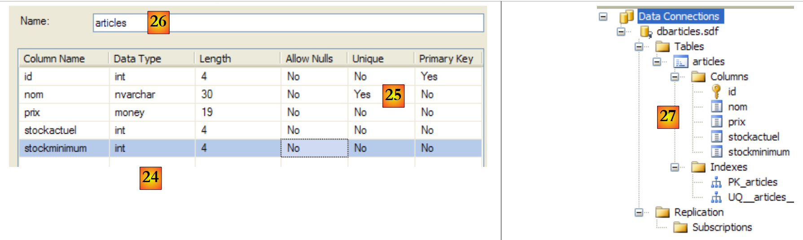
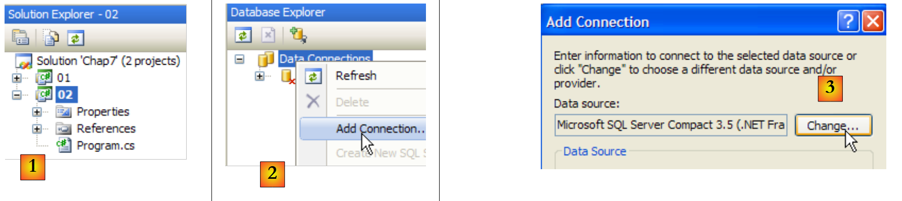
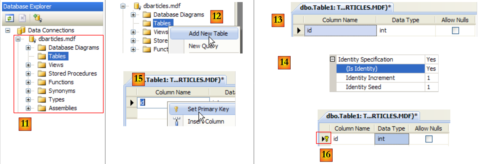
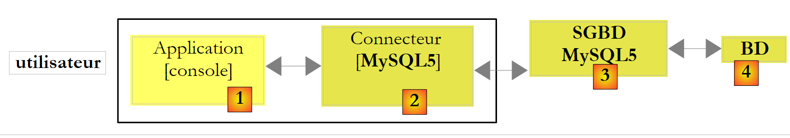
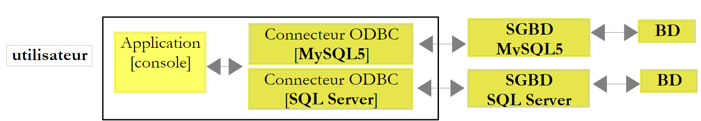
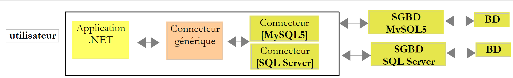
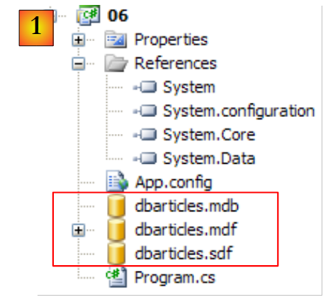
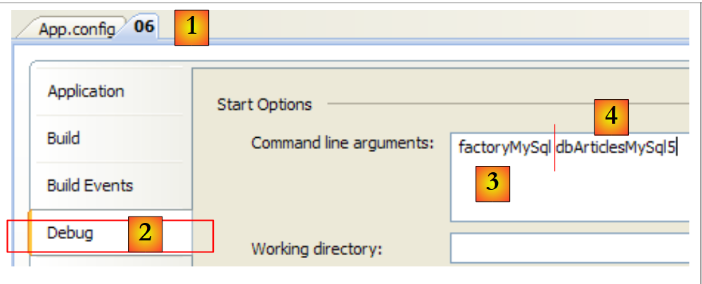
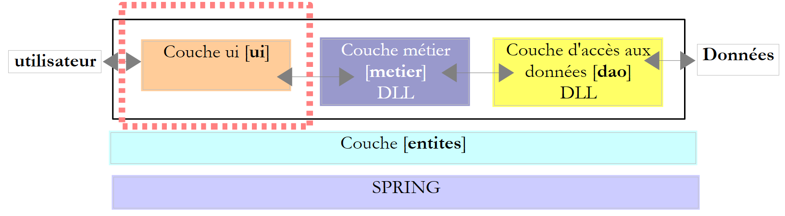
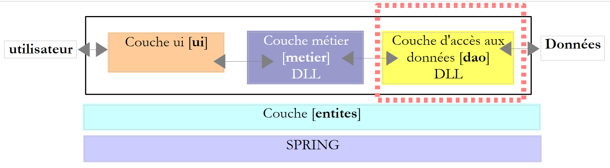

9. Datenbankzugriff
9.1. ADO.NET-Konnektor
Werfen wir noch einmal einen Blick auf die mehrschichtige Architektur, die bei verschiedenen Gelegenheiten zum Einsatz kommt
 |
In den untersuchten Beispielen hat die [dao]-Schicht bisher zwei Arten von Datenquellen genutzt:
- fest codierte Daten
- Daten aus Textdateien
In diesem Kapitel untersuchen wir den Fall, in dem die Daten aus einer Datenbank stammen. Die 3-Schichten-Architektur entwickelt sich dann zu einer mehrschichtigen Architektur. Es gibt verschiedene Arten von mehrschichtigen Architekturen. Wir werden die grundlegenden Konzepte anhand der folgenden Beispiele untersuchen:
 |
In der obigen Abbildung kommuniziert die [DAO]-Schicht [1] mit dem DBMS [3] über eine für das verwendete DBMS spezifische Klassenbibliothek, die mit diesem ausgeliefert wird. Diese Schicht implementiert Standardfunktionen, die als ADO (ActiveX Data Objects) bekannt sind. Eine solche Schicht wird als Provider (hier: Datenbankzugriffsprovider) oder auch als Connector bezeichnet. Die meisten SGBDs verfügen mittlerweile über einen ADO.NET-Connector, was in den Anfängen der .NET-Plattform noch nicht der Fall war. Die .NET-Connectoren bieten keine Standardschnittstelle zur [dao]-Schicht, sodass letztere die Namen der Connector-Klassen in ihrem Code enthält. Wenn Sie das SGBD wechseln, wechseln Sie den Connector und die Klassen, und Sie müssen die [dao]-Schicht ändern. Dies ist einerseits effizient, da der .NET-Konnektor, der für ein bestimmtes SGBD geschrieben wurde, weiß, wie man es am besten nutzt, und andererseits unflexibel, da eine Änderung des SGBD eine Änderung der [dao]-Schicht bedeutet. Dieses zweite Argument sollte relativiert werden: Unternehmen wechseln ihr SGBD nicht sehr oft. Wir werden später sehen, dass es seit Version 2.0 von .NET einen generischen Konnektor gibt, der Flexibilität bietet, ohne die Leistung zu beeinträchtigen.
9.2. Die beiden Möglichkeiten, eine Datenquelle zu nutzen
Die .NET-Plattform ermöglicht es Ihnen, eine Datenquelle auf zwei verschiedene Arten zu nutzen:
- Verbundener Modus
- Offline-Modus
Im verbundenen Modus
- eine Verbindung zur Datenquelle
- arbeitet mit der Lese-/Schreib-Datenquelle
- schließt die Verbindung
Im Offline-Modus
- eine Verbindung zur Datenquelle
- erhält eine Speicherkopie aller oder eines Teils der Quelldaten
- schließt die Verbindung
- arbeitet mit der Speicherkopie der Lese-/Schreibdaten
- öffnet nach Abschluss des Auftrags eine Verbindung, sendet die geänderten Daten an die Datenquelle, damit diese berücksichtigt werden, und schließt die Verbindung
Wir werden hier nur den verbundenen Modus behandeln.
9.3. Grundbegriffe des Datenbankbetriebs
Wir werden die wichtigsten Konzepte der Datenbanknutzung anhand einer SQL Server Compact 3.5-Datenbank veranschaulichen. Dieses DBMS wird mit Visual Studio Express ausgeliefert. Es handelt sich um ein leichtgewichtiges DBMS, das jeweils nur einen Benutzer verwalten kann. Es reicht jedoch aus, um in die Datenbankprogrammierung einzuführen. Zu einem späteren Zeitpunkt werden wir weitere DBMS vorstellen.
Die verwendete Architektur sieht wie folgt aus:
 |
Eine Konsolenanwendung [1] bedient eine SQL Server Compact-Datenbank [3,4] über den ADO.NET-Konnektor dieses DBMS [2].
9.3.1. Besuchen Sie die Beispieldatenbank unter
Wir werden die Datenbank direkt in Visual Studio Express erstellen. Dazu erstellen wir ein neues Konsolenprojekt.
 |
- [1]: Das Projekt
- [2]: öffnet die Ansicht „Datenbank-Explorer“
- [3]: Erstellen einer neuen Verbindung
 |
- [4]: Wählt den Typ des Datenbanksystems aus
- [5,6]: Wählen Sie das SGBD „SQL Server Compact“ aus
- [7]: Erstellen Sie die Datenbank
- [8]: Eine SQL Server Compact-Datenbank ist in einer einzigen .sdf-Datei gekapselt. Wir geben an, wo sie erstellt werden soll, hier im C#-Projektordner.
- [9]: Die neue Datenbank hat den Namen [dbarticles.sdf] erhalten
- [10]: Die französische Sprache wird ausgewählt. Dies hat Auswirkungen auf Sortiervorgänge.
- [11,12]: Die Datenbank kann mit einem Passwort geschützt werden. Hier „dbarticles“.
- [13]: Bestätigen Sie die Informationsseite. Die Datenbank ist nun physisch erstellt:
 |
- [14]: Der Name der soeben erstellten Datenbank
- [15]: Aktivieren Sie die Option „Passwort speichern“, damit Sie es nicht jedes Mal neu eingeben müssen
- [16]: Verbindung prüfen
- [17]: Alles in Ordnung
- [18]: Überprüft die Informationsseite
- [19]: Die Verbindung wird im Datenbank-Explorer angezeigt
- [20]: Derzeit enthält die Datenbank keine Tabellen. Erstellen wir eine. Ein Artikel wird die folgenden Felder haben:
- id: eine eindeutige Kennung – Primärschlüssel
- name: Artikelname – eindeutig
- price: Artikelpreis
- stockactuel: der aktuelle Lagerbestand
- Mindestbestand: Der Mindestbestand, bei dessen Unterschreitung der Artikel nachbestellt werden muss
 |
- [21]: Das Feld [id] ist vom Typ Integer und stellt den Primärschlüssel der Tabelle dar [22].
- [23]: Dieser Primärschlüssel ist vom Typ „Identity“. Dieser Begriff, der spezifisch für das Datenbankmanagementsystem SQL Server ist, bedeutet, dass der Primärschlüssel vom Datenbankmanagementsystem selbst generiert wird. In diesem Fall ist der Primärschlüssel eine ganze Zahl, die bei 1 beginnt und für jeden neuen Schlüssel um 1 erhöht wird.
 |
- [24]: Die anderen Felder werden angelegt. Beachten Sie, dass das Feld [name] eine Eindeutigkeitsbeschränkung vom Typ „ “ aufweist [25].
- [26]: Der Tabelle wird ein Name zugewiesen
- [27]: Sobald die Tabellenstruktur validiert wurde, erscheint sie in der Datenbank.
 |
- [28]: Anfrage zum Anzeigen des Tabelleninhalts
- [29]: derzeit leer
- [30]: Hier werden einige Daten eingegeben. Eine Zeile wird validiert, sobald die nächste Zeile eingegeben wird. Das Feld [id] wird nicht eingegeben: Es wird automatisch generiert, wenn die Zeile validiert wird.
Wir müssen das Projekt nun so konfigurieren, dass diese Datenbank, die sich derzeit im Stammverzeichnis des Projekts befindet, automatisch in den Projekt-Ausführungsordner kopiert wird:
 |
- [1]: Anforderung, alle Dateien anzuzeigen
- [2]: Basis [dbarticles.sdf] erscheint
- [3]: Wir fügen sie in das Projekt ein
 |
- [4]: Beim Hinzufügen einer Datenquelle zu einem Projekt wird ein Assistent gestartet, den wir hier nicht benötigen [5].
- [6]: Die Datenbank ist nun Teil des Projekts. Wir kehren in den Normalmodus zurück [7].
- [8]: das Projekt mit seiner Datenbank
- [9]: In den Datenbank-Eigenschaften sehen wir [10], dass die Datenbank automatisch in den Ausführungsordner des Projekts kopiert wird. Dort wird das Programm, das wir gleich schreiben werden, danach suchen.
Da wir nun über eine Datenbank verfügen, können wir diese nutzen. Schauen wir uns zunächst SQL an.
9.3.2. Die vier grundlegenden Befehle der SQL-Sprache
SQL (Structured Query Language) ist eine teilweise standardisierte Sprache zum Abfragen und Aktualisieren von Datenbanken. Alle SGBDs halten sich an den standardisierten Teil von SQL, fügen der Sprache jedoch proprietäre Erweiterungen hinzu, die bestimmte Funktionen des SGBDs nutzen. Wir haben bereits zwei Beispiele gesehen: Die automatische Generierung von Primärschlüsseln und die für Tabellenspalten zulässigen Typen hängen oft vom SGBD ab.
Die vier grundlegenden SQL-Befehle, die wir hier vorstellen, sind standardisiert und werden von allen SGBDs akzeptiert:
Die Abfrage, die die in einer Datenbank enthaltenen Daten abruft. Nur die Schlüsselwörter in der ersten Zeile sind obligatorisch, die anderen sind optional. Weitere Schlüsselwörter, die hier nicht aufgeführt sind, finden Sie unter .
| |
Fügt eine Zeile in die Tabelle ein. (col1, col2, ...) gibt die Spalten der Zeile an, die mit den Werten (val1, val2, ...) initialisiert werden sollen. | |
Aktualisiert die Tabelle unter Berücksichtigung der Bedingung (alle Zeilen, wenn kein where angegeben ist). Für diese Zeilen erhält coli den Wert vali | |
Löscht alle Tabellenprüfbedingungen |
Wir werden eine Konsolenanwendung schreiben, um SQL-Befehle an die zuvor erstellte Datenbank [dbarticles] zu senden. Hier ist ein Beispiel für die Ausführung von . Der Leser ist eingeladen, die ausgeführten SQL-Befehle und deren Ergebnisse zu verstehen.
- Zeile 1: Die Verbindungszeichenfolge: Diese enthält alle Parameter, die für die Verbindung zur Datenbank benötigt werden.
- Zeile 3: Fordert den Inhalt der Tabelle [articles] an
- Zeile 16: Eine neue Zeile wird eingefügt. Beachten Sie, dass die ID bei diesem Vorgang nicht initialisiert wird, da das DBMS den Wert dieses Feldes generiert.
- Zeile 19: Überprüfung. Zeile 28: Die Zeile wurde hinzugefügt.
- Zeile 30: Der Preis des gerade hinzugefügten Artikels wird um 10 % erhöht.
- Zeile 33: Überprüfung
- Zeile 42: Die Preiserhöhung hat stattgefunden
- Zeile 44: Der zuvor hinzugefügte Artikel wird gelöscht
- Zeile 47: OK
- Zeilen 53–55: Der Artikel ist nicht mehr vorhanden.
9.3.3. Grundlegende ADO.NET-Schnittstellen für den verbundenen Modus
Kehren wir zum Diagramm einer Anwendung zurück, die eine Datenbank über einen ADO.NET-Konnektor nutzt:
 |
Im verbundenen Modus:
- eine Verbindung zur Datenquelle
- arbeitet mit der Lese-/Schreib-Datenquelle
- schließt die Verbindung
Drei ADO.NET-Schnittstellen sind hauptsächlich von diesen Vorgängen betroffen:
- IDbConnection, die die Eigenschaften und Methoden der Verbindung kapselt.
- IDbCommand, das die Eigenschaften und Methoden des ausgeführten SQL-Befehls kapselt.
- IDataReader, das die Eigenschaften und Methoden des Ergebnisses einer SQL-Select-Anweisung kapselt.
Die Schnittstelle „ “ IDbConnection
Wird zur Verwaltung der Datenbankverbindung verwendet. Die Methoden M und Eigenschaften P dieser Schnittstelle lauten wie folgt:
Name | Typ | Rolle |
P | Verbindungskette zur Basis. Sie gibt alle Parameter an, die zum Herstellen einer Verbindung mit einer bestimmten Basis erforderlich sind. | |
M | öffnet die Verbindung zu der durch ConnectionString definierten Datenbank | |
M | schließt die Verbindung | |
M | startet eine Transaktion. | |
P | Verbindungsstatus: ConnectionState.Closed, ConnectionState.Open, ConnectionState.Connecting, ConnectionState.Executing, ConnectionState.Fetching, ConnectionState.Broken |
Wenn Connection eine Klasse ist, die IDbConnection implementiert, kann die Verbindung wie folgt geöffnet werden:
Die Schnittstelle „ “ IDbCommand
Wird verwendet, um einen SQL-Befehl oder eine gespeicherte Prozedur auszuführen. Die Methoden M und Eigenschaften P dieser Schnittstelle lauten wie folgt:
Name | Typ | Rolle |
P | gibt an, was ausgeführt werden soll – bezieht seine Werte aus einer Aufzählung: - CommandType.Text: Führt den in CommandText definierten SQL-Befehl aus. Dies ist der Standardwert. - CommandType.StoredProcedure: Führt eine in der | |
P | - Text des auszuführenden SQL-Befehls, wenn CommandType= CommandType.Text - der Name der auszuführenden gespeicherten Prozedur, wenn CommandType= CommandType.StoredProcedure | |
P | die Verbindung IDbConnection, die zur Ausführung des SQL-Befehls verwendet werden soll | |
P | die Transaktions-ID `IDbTransaction`, in der der SQL-Befehl ausgeführt werden soll | |
P | die Parameterliste eines parametrisierten SQL-Befehls. Der Befehl update articles set price=price*1.1 where id=@id enthält den Parameter @id. | |
M | um eine SQL-Select-Anweisung auszuführen. Das Ergebnis ist ein IDataReader-Objekt, das das Ergebnis der Select-Anweisung darstellt. | |
M | zum Ausführen eines SQL-Befehls „Update“, „Insert“ oder „Delete“. Dies gibt die Anzahl der von der Operation betroffenen Zeilen an (aktualisiert, eingefügt, gelöscht). | |
M | zum Ausführen einer SQL-Anweisung vom Typ „Select“ gibt ein einzelnes Ergebnis zurück, wie in: select count(*) from articles. | |
M | zum Erstellen von Parametern für den Befehl IDbParameter SQL. | |
M | optimiert die Ausführung einer parametrisierten Abfrage, wenn diese mehrfach mit unterschiedlichen Parametern ausgeführt wird. |
Wenn Command eine Klasse ist, die IDbCommand implementiert, sieht die Ausführung eines SQL-Befehls ohne Transaktion wie folgt aus:
Die Schnittstelle „ “ IDataReader
Wird verwendet, um die Ergebnisse einer SQL-Select-Anweisung zu kapseln. Ein IDataReader-Objekt repräsentiert eine Tabelle mit Zeilen und Spalten, die nacheinander verarbeitet werden: zuerst die erste Zeile, dann die zweite, ... Die Methoden M und Eigenschaften P dieser Schnittstelle lauten wie folgt:
Name | Typ | Rolle |
P | die Anzahl der Spalten in der Tabelle IDataReader | |
M | GetName(i) gibt den Namen der Spalte Nr. i der Tabelle IDataReader zurück. | |
P | Item[i] steht für die Spalte Nr. i in der aktuellen Zeile der Tabelle IDataReader. | |
M | springt zur nächsten Zeile in der Tabelle IDataReader. Render Boolean True, wenn das Lesen möglich war, andernfalls False. | |
M | Schließt den Tabellen-IDataReader. | |
M | GetBoolean(i): Gibt den booleschen Wert der Spalte Nr. i in der aktuellen Tabellenzeile des IDataReader zurück. Weitere ähnliche Methoden sind: GetDateTime, GetDecimal, GetDouble, GetFloat, GetInt16, GetInt32, GetInt64, GetString. | |
M | Getvalue(i): Gibt den Wert der Spalte Nr. i in der aktuellen Tabellenzeile IDataReader als Typobjekt zurück. | |
M | IsDBNull(i) gibt „True“ zurück, wenn Spalte Nr. i in der aktuellen Zeile des IDataReaders keinen Wert hat, was durch SQL NULL symbolisiert wird. |
Die Verwendung eines IDataReader-Objekts sieht oft wie folgt aus:
9.3.4. Fehlerbehandlung
Sehen wir uns die Architektur einer Datenbankanwendung an:
 |
Die [dao]-Schicht kann während des Datenbankbetriebs auf zahlreiche Fehler stoßen. Diese werden vom ADO.NET-Konnektor als Ausnahmen ausgelöst. Der Code der [dao]-Schicht muss diese behandeln. Jeder Vorgang mit der Datenbank muss im Try/Catch/Finally-Modus ausgeführt werden, um Ausnahmen abzufangen und zu behandeln sowie die Ressourcen freizugeben, die freigegeben werden müssen. Der oben gezeigte Code zur Auswertung des Ergebnisses einer Select-Abfrage sieht beispielsweise wie folgt aus:
Unabhängig davon, was passiert, müssen die Objekte IDataReader und IDbConnection geschlossen werden. Aus diesem Grund ist dieses Schließen in den finally-Klauseln enthalten.
Das Schließen der Verbindung und des Objekts IDataReader kann mit einem using automatisiert werden:
- Zeile 3, die using-Klausel stellt sicher, dass die in using(...){...} geöffnete Verbindung außerhalb dieses Blocks geschlossen wird, unabhängig davon, wie Sie den Block verlassen: normal oder durch das Auftreten einer Ausnahme. Dies spart ein finally, aber der Vorteil liegt nicht in dieser geringfügigen Einsparung. Die Verwendung von „using“ verhindert, dass der Entwickler die Verbindung selbst schließt. Oder das Vergessen, eine Verbindung zu schließen, kann unbemerkt bleiben und die Anwendung auf eine scheinbar zufällige Weise zum Absturz bringen, jedes Mal, wenn das SGBD die maximale Anzahl offener Verbindungen erreicht, die es unterstützen kann.
- Zeile 11: Gehen Sie auf die gleiche Weise vor, um das Objekt IDataReader zu schließen.
9.3.5. Beispiel für eine Projektkonfiguration
Das endgültige Projekt sieht wie folgt aus:
 |
- [1]: Das Projekt verfügt über eine Konfigurationsdatei [App.config]
- [2]: Es verwendet zwei DLL-Klassen, auf die standardmäßig nicht verwiesen wird und die daher zu den Projektreferenzen hinzugefügt werden müssen:
- [System.Configuration], um die Konfigurationsdatei [App.config] zu verwenden
- [System.Data.SqlServerCe] zur Nutzung der SQL Server Compact-Datenbank
- [3, 4]: Hier wird noch einmal erklärt, wie man Referenzen zu einem Projekt hinzufügt.
- [5, 6]: Erinnern Sie sich daran, wie man die Datei [App.config] zu einem Projekt hinzufügt.
Die Konfigurationsdatei [App.config] sieht wie folgt aus:
<?xml version="1.0" encoding="utf-8" ?>
<configuration>
<connectionStrings>
<add name="dbSqlServerCe" connectionString="Data Source=|DataDirectory|\dbarticles.sdf;Password=dbarticles;" />
</connectionStrings>
</configuration>
- Zeilen 3–5: Das <-Tag connectionStrings> definiert Datenbankverbindungszeichenfolgen. Eine Verbindungszeichenfolge hat die Form „Parameter1=Wert1;Parameter2=Wert2;...“. Sie definiert alle Parameter, die zum Herstellen einer Verbindung mit einer bestimmten Datenbank erforderlich sind. Diese Verbindungszeichenfolgen ändern sich je nach SGBD. Die [http://www.connectionstrings.com/] gibt die Form dieser Zeichenfolgen für die wichtigsten SGBDs an.
- Zeile 4: Definiert eine spezifische Verbindungszeichenfolge, hier für die zuvor erstellte SQL Server Compact-Datenbank dbarticles.sdf:
- name = Name der Verbindungszeichenfolge. Über diesen Namen wird eine Verbindungszeichenfolge vom C#-Programm abgerufen
- connectionString: die Verbindungszeichenfolge für eine Basis-SQL Server Compact-Datenbank
- DataSource: gibt den Basis-Pfad an. Die Syntax |DataDirectory| bezeichnet den Projekt-Ausführungsordner.
- Password: Basis-Passwort. Dieser Parameter fehlt, wenn kein Passwort vorhanden ist.
Der C#-Code zum Abrufen der oben genannten Verbindungszeichenfolge lautet wie folgt:
string connectionString = ConfigurationManager.ConnectionStrings["dbSqlServerCe"].ConnectionString;
- ConfigurationManager ist die Klasse der DLL [System.Configuration], die zur Verwaltung der Datei [App.config] verwendet wird.
- ConnectionsStrings["nom"].ConnectionString: Bezieht sich auf den Abschnitt <connectionStrings> mit dem Tag <add name="name" connectionString="..."> in der Datei [App.config]
Das Projekt ist nun konfiguriert. Wir betrachten nun die Klasse [Program.cs], von der wir zuvor ein Beispiel gesehen haben.
9.3.6. Das Beispielprogramm
Das Programm [Program.cs] sieht wie folgt aus:
using System;
using System.Collections.Generic;
using System.Data.SqlServerCe;
using System.Text;
using System.Text.RegularExpressions;
using System.Configuration;
namespace Chap7 {
class SqlCommands {
static void Main(string[] args) {
// console application - executes SQL requests typed from the keyboard
// on a database whose connection string is obtained from a configuration file
// use of configuration file [App.config]
string connectionString = null;
try {
connectionString = ConfigurationManager.ConnectionStrings["dbSqlServerCe"].ConnectionString;
} catch (Exception e) {
Console.WriteLine("Erreur de configuration : {0}", e.Message);
return;
}
// display connection string
Console.WriteLine("Chaîne de connexion à la base : [{0}]\n", connectionString);
// build a dictionary of accepted sql commands
string[] commandesSQL = new string[] { "select", "insert", "update", "delete" };
Dictionary<string, bool> dicoCommandes = new Dictionary<string, bool>();
for (int i = 0; i < commandesSQL.Length; i++) {
dicoCommandes.Add(commandesSQL[i], true);
}
// read-execute SQL commands typed on the keyboard
string requête = nu ll; // query text SQL
string[] cham ps; // query fields
Regex modèle = new Regex(@"\s+ "); // sequence of spaces
// input-execution loop for SQL commands typed on keyboard
while (true) {
// request for query
Console.Write("\nRequête SQL (rien pour arrêter) : ");
requête = Console.ReadLine().Trim().ToLower();
// finished?
if (requête == "")
break;
// the query is broken down into fields
champs = modèle.Split(requête);
// valid request?
if (champs.Length == 0 || ! dicoCommandes.ContainsKey(champs[0])) {
// error msg
Console.WriteLine("Requête invalide. Utilisez select, insert, update, delete ou rien pour arrêter");
// following request
continue;
}
// query execution
if (champs[0] == "select") {
ExecuteSelect(connectionString, requête);
} else
ExecuteUpdate(connectionString, requête);
}
}
// execute an update request
static void ExecuteUpdate(string connectionString, string requête) {
...
}
// executing a Select query
static void ExecuteSelect(string connectionString, string requête) {
....
}
}
}
- Zeilen 1–6: In der Anwendung verwendete Namespaces. Für die Verwaltung einer SQL Server Compact-Datenbank ist der Namespace [System.Data.SqlServerCe] in Zeile 3 erforderlich. Dies ist eine Abhängigkeit von einem proprietären Namespace des Datenbanksystems. Das bedeutet, dass das Programm angepasst werden muss, wenn das Datenbanksystem gewechselt wird.
- Zeile 18: Die Datenbankverbindungszeichenfolge wird aus der Datei [App.config] gelesen und in Zeile 25 angezeigt. Sie wird verwendet, um eine Verbindung zur Datenbank herzustellen.
- Zeilen 28–32: Ein Wörterbuch, das die Namen der vier zulässigen SQL-Befehle speichert: select, insert, update, delete.
- Zeilen 40–62: Die Schleife zur Eingabe von über die Tastatur eingegebenen SQL-Befehlen und deren Ausführung in der Datenbank
- Zeile 48: Die über die Tastatur eingegebene Zeile wird in Felder zerlegt, um den ersten Begriff zu ermitteln, der einer der folgenden sein muss: select, insert, update, delete
- Zeilen 50–55: Ist die Abfrage ungültig, wird eine Fehlermeldung angezeigt und man fährt mit der nächsten Abfrage fort.
- Zeilen 57–61: Der eingegebene SQL-Befehl wird ausgeführt. Diese Ausführung erfolgt unterschiedlich, je nachdem, ob es sich um einen select-Befehl oder einen insert-, update- oder delete-Befehl handelt. Im ersten Fall ruft der Befehl Daten aus der Datenbank ab, ohne sie zu ändern; im zweiten Fall aktualisiert er die Datenbank, ohne Daten abzurufen. In beiden Fällen wird die Ausführung an eine Methode delegiert, die zwei Parameter benötigt:
- die Verbindungszeichenfolge, die die Verbindung zur Datenbank ermöglicht
- den SQL-Befehl, der über diese Verbindung ausgeführt werden soll
9.3.7. Ausführen einer SELECT-Abfrage
Die Ausführung von SQL-Befehlen erfordert die folgenden Schritte:
- Datenbankverbindung
- Senden von SQL-Befehlen an die Datenbank
- Verarbeitung der SQL-Befehlsergebnisse
- Schließen der Verbindung
Die Schritte 2 und 3 werden wiederholt ausgeführt, wobei die Verbindung erst geschlossen wird, wenn die Datenbank nicht mehr verwendet wird. Offene Verbindungen sind begrenzte Ressourcen eines DBMS. Sie müssen geschont werden. Deshalb versuchen wir stets, die Lebensdauer einer offenen Verbindung zu begrenzen. In diesem Beispiel wird die Verbindung nach jedem SQL-Befehl geschlossen. Für den nächsten SQL-Befehl wird eine neue Verbindung geöffnet. Das Öffnen und Schließen einer Verbindung ist ressourcenintensiv. Um diesen Aufwand zu reduzieren, bieten einige DBMS das Konzept von Verbindungspools an: Bei der Initialisierung der Anwendung werden N Verbindungen geöffnet und dem Pool zugewiesen. Sie bleiben bis zum Ende der Anwendung offen. Wenn die Anwendung eine Verbindung öffnet, erhält sie eine der N bereits im Pool offenen Verbindungen. Wenn sie die Verbindung schließt, gibt sie diese einfach an den Pool zurück. Der Vorteil dieses Systems besteht darin, dass es für den Entwickler transparent ist: Das Programm muss nicht geändert werden, um den Verbindungspool zu nutzen. Die Konfiguration des Verbindungspools ist vom jeweiligen SGBD abhängig.
Zunächst betrachten wir die Ausführung von SQL-Anweisungen vom Typ Select. Die Methode ExecuteSelect unseres Beispielprogramms sieht wie folgt aus:
// execute a Select query
static void ExecuteSelect(string connectionString, string requête) {
// handle any exceptions
try {
using (SqlCeConnection connexion = new SqlCeConnection(connectionString)) {
// opening connection
connexion.Open();
// executes sqlCommand with select query
SqlCeCommand sqlCommand = new SqlCeCommand(requête, connexion);
SqlCeDataReader reader= sqlCommand.ExecuteReader();
// displaying results
AfficheReader(reader);
}
} catch (Exception ex) {
// error msg
Console.WriteLine("Erreur d'accès à la base de données (" + ex.Message + ")");
}
}
// reader display
static void AfficheReader(IDataReader reader) {
...
}
- Zeile 2: Die Methode erhält zwei Parameter:
- die Verbindungszeichenfolge [connectionString], die die Verbindung zur Datenbank ermöglicht
- den SQL-Select-Befehl [request], der über diese Verbindung ausgeführt werden soll
- Zeile 4: Jeder Vorgang mit einer Datenbank kann eine Ausnahme auslösen, die Sie möglicherweise behandeln möchten. Dies ist hier umso wichtiger, als die vom Benutzer eingegebenen SQL-Befehle syntaktische Fehler enthalten können. Wir müssen in der Lage sein, ihn darauf hinzuweisen. Der gesamte Code befindet sich daher innerhalb eines try/catch-Blocks.
- Zeile 5: Hier geschehen mehrere Dinge:
- Die Verbindung zur Datenbank wird mit der Verbindungszeichenfolge [connectionString] initialisiert. Sie ist noch nicht geöffnet. Sie wird in Zeile 7 geöffnet.
- Die Klausel using (Resource) {...} ist eine syntaktische Konstruktion, die die Freigabe der Ressource Resource – hier eine Verbindung – am Ende des durch using kontrollierten Blocks garantiert.
- Die Verbindung ist vom proprietären Typ SqlCeConnection, spezifisch für das Datenbankmanagementsystem SQL Server Compact.
- Zeile 7: Die Verbindung wird geöffnet. Dabei werden die Parameter der Verbindungszeichenfolge verwendet.
- Zeile 9: Ein SQL-Befehl wird über das Objekt SqlCeCommand ausgegeben. In Zeile 9 wird dieses Objekt mit zwei Informationen initialisiert: der zu verwendenden Verbindung und dem SQL-Befehl, der über diese gesendet werden soll. Das Objekt SqlCeCommand kann verwendet werden, um einen Select-, Update-, Insert- oder Delete-Befehl auszuführen. Seine Eigenschaften und Methoden wurden in Abschnitt 9.3.3 vorgestellt.
- Zeile 10: Ein SQL-Befehl „Select“ wird über das Objekt ExecuteReader von SqlCeCommand ausgeführt, das ein Objekt IDataReader erstellt, dessen Methoden und Eigenschaften in Abschnitt 9.3.3 beschrieben wurden.
- Zeile 12: Die Anzeige der Ergebnisse wird dem AfficheReader anvertraut. Weiter:
// reader display
static void AfficheReader(IDataReader reader) {
using (reader) {
// exploitation of results
// -- columns
StringBuilder ligne = new StringBuilder();
int i;
for (i = 0; i < reader.FieldCount - 1; i++) {
ligne.Append(reader.GetName(i)).Append(",");
}
ligne.Append(reader.GetName(i));
Console.WriteLine("\n{0}\n{1}\n{2}\n", "".PadLeft(ligne.Length, '-'), ligne, "".PadLeft(ligne.Length, '-'));
// -- data
while (reader.Read()) {
// current line operation
ligne = new StringBuilder();
for (i = 0; i < reader.FieldCount; i++) {
ligne.Append(reader[i].ToString()).Append(" ");
}
Console.WriteLine(ligne);
}
}
}
- Zeile 2: Die Methode erhält ein Objekt vom Typ IDataReader. Beachten Sie, dass es sich hierbei um eine Schnittstelle und nicht um eine bestimmte Klasse handelt.
- Zeile 3: Die Klausel „using“ dient dazu, das Schließen des IDataReader automatisch zu verwalten.
- Zeilen 8–10: Die Spaltennamen der Ergebnistabelle der Select-Anweisung. Dies sind die Spalten coli der Abfrage select col1, col2, ... from table ...
- Zeilen 14–21: Durchsuchen der Ergebnistabelle und Anzeigen der Werte für jede Tabellenzeile.
- Zeile 18: Wir kennen den Typ der Spalte i im Ergebnis nicht, da wir die abgefragte Tabelle nicht kennen. Die Syntax reader.GetXXX(i), wobei XXX der Typ der Spalte Nr. i ist, da dieser Typ nicht bekannt ist. Anschließend verwenden wir die Syntax reader.Item[i].ToString(), um die Zeichenfolgendarstellung der Spalte Nr. i zu erhalten. Die Syntax reader.Item[i].ToString() kann zu reader[i].ToString() abgekürzt werden.
9.3.8. Ausführen eines Aktualisierungsbefehls: INSERT, UPDATE, DELETE
Der Code der Methode ExecuteUpdate lautet wie folgt:
// execute an update request
static void ExecuteUpdate(string connectionString, string requête) {
// handle any exceptions
try {
using (SqlCeConnection connexion = new SqlCeConnection(connectionString)) {
// opening connection
connexion.Open();
// executes sqlCommand with update request
SqlCeCommand sqlCommand = new SqlCeCommand(requête, connexion);
int nbLignes = sqlCommand.ExecuteNonQuery();
// result display
Console.WriteLine("Il y a eu {0} ligne(s) modifiée(s)", nbLignes);
}
} catch (Exception ex) {
// error msg
Console.WriteLine("Erreur d'accès à la base de données (" + ex.Message + ")");
}
}
Wir haben bereits erwähnt, dass die Ausführung eines Select-Befehls sich nicht von der eines Update-, Insert- oder Delete-Befehls unterscheidet, da die Objektmethode SqlCeCommand für Select die Methode ExecuteReader und für Update, Insert und Delete die Methode ExecuteNonQuery verwendet. Wir gehen im obigen Code nur auf die letztgenannte Methode ein:
- Zeile 10: Die Befehle Update, Insert und Delete werden vom SqlCeCommand-Objekt mit ExecuteNonQuery ausgeführt. Bei Erfolg gibt diese Methode die Anzahl der aktualisierten (Update), eingefügten (Insert) oder gelöschten (Delete) Zeilen zurück.
- Zeile 12: Diese Zeilenzahl wird auf dem Bildschirm angezeigt
Der Leser wird gebeten, sich ein Beispiel für die Ausführung dieses Codes in Abschnitt 9.3.2 anzusehen.
9.4. Andere ADO.NET-Konnektoren
Der Code, den wir untersucht haben, ist proprietär: Er hängt von der Namespace [System.Data.SqlServerCe] für das Datenbankmanagementsystem SQL Server Compact ab. Wir werden nun dasselbe Programm mit verschiedenen .NET-Konnektoren erstellen und sehen, was sich ändert.
9.4.1. Konnektor SQL Server 2005
Die verwendete Architektur sieht wie folgt aus:
 |
Die Installation von SQL Server 2005 wird in den Anhängen in Abschnitt 1.1 beschrieben.
Wir erstellen ein zweites Projekt in derselben Lösung wie zuvor und richten anschließend die SQL Server 2005-Datenbank ein. Das Datenbankmanagementsystem SQL Server 2005 muss vor den folgenden Vorgängen gestartet sein:
 |
- [1]: Erstellen Sie ein neues Projekt in der aktuellen Lösung und machen Sie es zum aktuellen Projekt.
- [2]: Erstellen Sie eine neue Verbindung
- [3]: Wählen Sie den Verbindungstyp aus
 |
- [4]: Wählen Sie die Datenbank SGBD SQL Server aus
- [5]: Ergebnis der vorherigen Auswahl
- [6]: Verwenden Sie die Schaltfläche [Durchsuchen], um anzugeben, wo die SQL Server 2005-Datenbank erstellt werden soll. Die Datenbank ist in einer .mdf-Datei gekapselt.
- [7]: Wählen Sie das Stammverzeichnis des neuen Projekts aus und rufen Sie die Basisdatei [dbarticles.mdf] auf.
- [8]: Verwenden Sie die Windows-Authentifizierung.
- [9]: Überprüfen Sie die Informationsseite
 |
- [11]: SQL Server-Datenbank
- [12]: Erstellen Sie eine Tabelle. Diese entspricht der zuvor erstellten SQL Server Compact-Datenbank.
- [13]: das Feld [id]
- [14]: Das Feld [id] ist vom Typ „Identity“.
- [15,16]: Das Feld [id] ist der Primärschlüssel
 |
- [17]: andere Tabellenfelder
- [18]: Geben Sie der Tabelle beim Speichern (Strg+S) den Namen [articles].
Wir müssen noch Daten in die :
 |  |
Wir binden die Datenbank in die : ein
 |
Die Projektreferenzen lauten wie folgt:
 |
Die Konfigurationsdatei [App.config] lautet wie folgt:
<?xml version="1.0" encoding="utf-8" ?>
<configuration>
<connectionStrings>
<add name="connectString1" connectionString="Data Source=.\SQLEXPRESS;AttachDbFilename=|DataDirectory|\dbarticles.mdf;Integrated Security=True;Connect Timeout=30;User Instance=True;" />
<add name="connectString2" connectionString="Data Source=.\SQLEXPRESS;AttachDbFilename=|DataDirectory|\dbarticles.mdf;Uid=sa;Pwd=msde;Connect Timeout=30;" />
</connectionStrings>
</configuration>
- Zeile 4: Datenbankverbindungszeichenfolge [dbarticles.mdf] mit Windows-Authentifizierung
- Zeile 5: Datenbankverbindungszeichenfolge [dbarticles.mdf] mit SQL Server-Authentifizierung. [sa,msde] ist das Paar (Anmeldung, Passwort) des SQL Server-Administrators, wie in Abschnitt 1.1 definiert.
Das Programm [Program.cs] entwickelt sich wie folgt:
using System.Data.SqlClient;
...
namespace Chap7 {
class SqlCommands {
static void Main(string[] args) {
...
// use of configuration file [App.config]
string connectionString = null;
try {
connectionString = ConfigurationManager.ConnectionStrings["connectString2"].ConnectionString;
} catch (Exception e) {
...
}
...
// read-execute SQL commands typed on the keyboard
...
}
// execute an update request
static void ExecuteUpdate(string connectionString, string requête) {
// handle any exceptions
try {
using (SqlConnection connexion = new SqlConnection(connectionString)) {
// opening connection
connexion.Open();
// executes sqlCommand with update request
SqlCommand sqlCommand = new SqlCommand(requête, connexion);
int nbLignes = sqlCommand.ExecuteNonQuery();
// result display
Console.WriteLine("Il y a eu {0} ligne(s) modifiée(s)", nbLignes);
}
} catch (Exception ex) {
....
}
}
// execute a Select query
static void ExecuteSelect(string connectionString, string requête) {
// handle any exceptions
try {
using (SqlConnection connexion = new SqlConnection(connectionString)) {
// opening connection
connexion.Open();
// executes sqlCommand with select query
SqlCommand sqlCommand = new SqlCommand(requête, connexion);
SqlDataReader reader = sqlCommand.ExecuteReader();
// exploitation of results
...
}
} catch (Exception ex) {
...
}
}
}
}
- Zeile 1: Der Namespace [System.Data.SqlClient] enthält Klassen zur Verwaltung einer SQL Server 2005-Datenbank
- Zeile 24: Die Verbindung ist vom Typ SQLConnection
- Zeile 28: Das Objekt, das SQL-Befehle kapselt, ist vom Typ SQLCommand
- Zeile 47: Das Objekt, das das Ergebnis eines SQL-Select-Befehls kapselt, ist vom Typ SQLDataReader
Der Code ist identisch mit dem für das SGBD SQL Server Compact verwendeten, abgesehen von den Klassennamen. Zur Ausführung können Sie (Zeile 11) eine der beiden in [App.config] definierten Verbindungszeichenfolgen verwenden.
9.4.2. Connector MySQL5
Die verwendete Architektur sieht wie folgt aus:
 |
Die Installation von MySQL5 wird im Anhang in Abschnitt 1.2 „Connector“ und die von Ado.Net Connector in Abschnitt 1.2.5 beschrieben.
Wir erstellen ein drittes Projekt in derselben Lösung wie zuvor und fügen die erforderlichen Verweise hinzu:
 |
- [1]: das neue Projekt
- [2]: zu dem wir Verweise hinzufügen
- [3]: die DLL [MySQL.Data] des Ado.Net-Konnektors von MySQL 5 sowie die von [System.Configuration] [4].
Wir erstellen nun die Datenbank [dbarticles] und ihre Tabelle [articles]. Das DBMS MySQL5 muss gestartet sein. Außerdem starten wir den [Query Browser]-Client (siehe Abschnitt 1.2.3).
 |
- [1]: Klicken Sie im [Query Browser] mit der rechten Maustaste in den Bereich [Schemata] [2], um [3] ein neues Schema zu erstellen – der Begriff, der eine Datenbank bezeichnet.
- [4]: Die Datenbank erhält den Namen [dbarticles]. In [5] sehen wir sie. Derzeit enthält sie noch keine Tabellen. Wir führen das folgende SQL-Skript aus:
- Zeile 1: Die Datenbank [dbarticles] wird zur aktuellen Datenbank. Die folgenden SQL-Befehle werden darauf ausgeführt.
- Zeilen 4–10: Definition der Tabelle [ARTICLES]. Beachten Sie, dass SQL zu MySQL gehört. Die Spaltentypen und die automatische Generierung des Primärschlüssels (Attribut AUTO_INCREMENT) unterscheiden sich von denen, die bei den DBMS SQL Server Compact und Express anzutreffen sind.
- Zeilen 12–14: Einfügen von drei Zeilen
- Zeilen 16–21: Hinzufügen von Integritätsbeschränkungen für Spalten.
Dieses Skript wird im [MySQL Query Browser] ausgeführt:
 |
- Im [MySQL Query Browser] [6] laden wir das Skript [7]. Sie können es in [8] sehen. In [9] wird es ausgeführt.
 |
- In [10] wurde die Tabelle [articles] erstellt. Doppelklicken Sie darauf. Daraufhin erscheint das Fenster [11] mit der Abfrage [12] darin, bereit zur Ausführung über [13]. In [14] sehen Sie das Ergebnis der Ausführung. Wir haben die drei erwarteten Zeilen. Beachten Sie, dass die Werte im Feld [ID] automatisch generiert wurden (Feldattribut AUTO_INCREMENT).
Da die Datenbank nun bereit ist, können wir zur Entwicklung der Anwendung in Visual Studio zurückkehren.
 |
In [1] das Programm [Program.cs] und die Konfigurationsdatei [App.config]. Letztere lautet wie folgt:
<?xml version="1.0" encoding="utf-8" ?>
<configuration>
<connectionStrings>
<add name="dbArticlesMySql5" connectionString="Server=localhost;Database=dbarticles;Uid=root;Pwd=root;" />
</connectionStrings>
</configuration>
Zeile 4, die Elemente der Verbindungskette lauten wie folgt:
- Server: Name des Rechners, auf dem sich das Datenbankmanagementsystem MySQL befindet, hier localhost, d. h. der Rechner, auf dem das Programm ausgeführt wird.
- Database: Name der verwalteten Datenbank, hier dbarticles
- Uid: Benutzername, hier root
- Pwd: das Passwort, hier root. Diese beiden Angaben beziehen sich auf den in Abschnitt 1.2 angelegten Administrator.
Das Programm [Program.cs] ist mit dem der vorherigen Versionen identisch, abgesehen von den folgenden Details:
MySql.Data.MySqlClient | |
MySqlConnection | |
MySqlCommand | |
MySqlDataReader |
Das Programm verwendet die Verbindungszeichenfolge mit dem Namen dbArticlesMySql5 in der Datei [App.config]. Die Ausführung liefert folgende Ergebnisse:
9.4.3. ODBC-Verbindung
Die verwendete Architektur sieht wie folgt aus:
 |
Der Vorteil von ODBC-Konnektoren besteht darin, dass sie den Anwendungen, die sie nutzen, eine Standardschnittstelle bieten. Somit kann die neue Anwendung mit einem einzigen Code mit jedem SGBD kommunizieren, das über einen ODBC-, CAD- oder SGBD-Konnektor verfügt. Die Leistung von ODBC-Konnektoren ist nicht so gut wie die von „proprietären“ Konnektoren, die alle Funktionen eines bestimmten DBMS nutzen können. Andererseits erhalten Sie eine große Anwendungsflexibilität: Sie können das DBMS wechseln, ohne den Code zu ändern.
Wir betrachten ein Beispiel, bei dem die Anwendung je nach der von Ihnen angegebenen Verbindungszeichenfolge eine MySQL5-Datenbank oder eine SQL Server Express-Datenbank verwendet. Im Folgenden gehen wir davon aus, dass:
- die DBMS SQL Server Express und MySQL5 gestartet wurden
- der ODBC-Treiber von MySQL5 auf dem Rechner vorhanden ist (siehe Abschnitt 1.2.6). Die Standardeinstellung ist SQL Server 2005.
- die verwendeten Datenbanken sind die in Abschnitt 9.4.2 für die MySQL5-Datenbank und die in Abschnitt 9.4.1 für die SQL Server Express-Datenbank.
Das neue Visual Studio-Projekt sieht wie folgt aus:
 |
Oben wurde die in Abschnitt 9.4.1 erstellte SQL Server-Datenbank [dbarticles.mdf] in die Projektdatei kopiert.
Die Konfigurationsdatei [App.config] sieht wie folgt aus:
<?xml version="1.0" encoding="utf-8" ?>
<configuration>
<connectionStrings>
<add name="dbArticlesOdbcMySql5" connectionString="Driver={MySQL ODBC 3.51 Driver};Server=localhost;Database=dbarticles; User=root;Password=root;" />
<add name="dbArticlesOdbcSqlServer2005" connectionString="Driver={SQL Native Client};Server=.\SQLExpress;AttachDbFilename=|DataDirectory|\dbarticles.mdf;Uid=sa;Pwd=msde;" />
</connectionStrings>
</configuration>
- Zeile 4: Quellverbindungszeichenfolge ODBC MySQL5. Dies ist eine bereits behandelte Zeichenfolge, in der wir einen neuen Parameter „Driver“ finden, der den zu verwendenden ODBC-Treiber definiert.
- Zeile 5: Quellverbindungszeichenfolge ODBC SQL Server Express. Dies ist die bereits in einem früheren Beispiel verwendete Zeichenfolge, der der Parameter „Driver“ hinzugefügt wurde.
Das Programm [Program.cs] ist mit Ausnahme der folgenden Details identisch mit dem der vorherigen Versionen:
System.Data.Odbc | |
OdbcConnection | |
OdbcCommand | |
ODBC-Datenleser |
Das Programm verwendet eine der beiden in der Datei [App.config] definierten Verbindungszeichenfolgen. Die Ausführung liefert folgende Ergebnisse:
Mit der Verbindungszeichenfolge [dbArticlesOdbcSqlServer2005]:
Mit Verbindungszeichenfolge [dbArticlesOdbcMySql5] :
9.4.4. OLE DB-Konnektor
Die verwendete Architektur sieht wie folgt aus:
 |
Wie bei ODBC-Konnektoren sind auch OLE-DB-Konnektoren (Object Linking and Embedding DataBase) verfügbar; diese Treiber bieten eine Standardschnittstelle für die Anwendungen, die sie nutzen. ODBC-Treiber ermöglichen den Zugriff auf Datenbanken. Die Datenquellentreiber für OLE-DB sind vielfältiger: Datenbanken, Messaging-Systeme, Verzeichnisse usw. Jede Datenquelle kann Gegenstand eines OLE-DB-Treibers sein, wenn ein Entwickler dies so beschließt. Dies ermöglicht einen standardisierten Zugriff auf eine Vielzahl von Daten.
Wir betrachten ein Beispiel, bei dem die Anwendung je nach der von Ihnen angegebenen Verbindungszeichenfolge entweder eine ACCESS- oder eine SQL Server Express-Datenbank verwendet. Im Folgenden gehen wir davon aus, dass das SGBD SQL Server Express gestartet wurde und dass die verwendete Datenbank die aus dem vorherigen Beispiel ist.
Das neue Visual Studio-Projekt sieht wie folgt aus:
 |
- in [1]: Der für OLE-DB-Konnektoren erforderliche Namespace ist [System.Data.OleDb], der in der obigen Referenz [System.Data] enthalten ist. Die SQL-Server-Datenbank [dbarticles.mdf] wurde aus dem vorherigen Projekt kopiert. Die Basisdatei [dbarticles.mdb] wurde mit Access erstellt.
- in [2]: Wie die SQL Server-Datenbank verfügt auch die Access-Datenbank über die Eigenschaft [Copy to Output Directory=Copy Always], sodass sie automatisch in den Projekt-Ausführungsordner kopiert wird.
Die ACCESS-Datenbank [dbarticles.mdb] sieht wie folgt aus:
 |
In [1] die Struktur der Tabelle [articles] und in [2] deren Inhalt.
Die Konfigurationsdatei [App.config] sieht wie folgt aus:
<?xml version="1.0" encoding="utf-8" ?>
<configuration>
<connectionStrings>
<add name="dbArticlesOleDbAccess" connectionString="Provider=Microsoft.Jet.OLEDB.4.0;Data Source=|DataDirectory|\dbarticles.mdb;"/>
<add name="dbArticlesOleDbSqlServer2005" connectionString="Provider=SQLNCLI;Server=.\SQLEXPRESS;AttachDbFilename=|DataDirectory|\dbarticles.mdf;Uid=sa;Pwd=msde;" />
</connectionStrings>
</configuration>
- Zeile 4: Quellverbindungszeichenfolge OLE DB ACCESS. Sie enthält den Parameter Provider, der den zu verwendenden OLE-DB-Treiber und den Datenbankpfad definiert
- Zeile 5: Quellverbindungszeichenfolge OLE DB Server Express.
Das Programm [Program.cs] ist mit Ausnahme der folgenden Details identisch mit dem der vorherigen Versionen:
System.Data.OleDb | |
OleDbConnection | |
OleDbCommand | |
OleDbDataReader |
Das Programm verwendet eine der beiden in der Datei [App.config] definierten Verbindungszeichenfolgen. Die Ausführung liefert mit der Verbindungszeichenfolge [dbArticlesOleDbAccess] folgende Ergebnisse:
9.4.5. Generischer Stecker
Die verwendete Architektur sieht wie folgt aus:
 |
Wie die ODBC- und OLE DB-Konnektoren bietet der generische Konnektor den Anwendungen, die ihn nutzen, eine Standardschnittstelle, verbessert jedoch die Leistung, ohne dabei an Flexibilität einzubüßen. Der generische Konnektor basiert auf den proprietären SGBD-Konnektoren. Die Anwendung nutzt Klassen aus dem generischen Konnektor. Diese Klassen fungieren als Vermittler zwischen der Anwendung und dem proprietären Konnektor.
Im obigen Beispiel gibt der generische Konnektor, wenn die Anwendung eine Verbindung anfordert, eine IDbConnection zurück – die in Abschnitt 9.3.3 beschriebene Verbindungsschnittstelle, die je nach Art der an ihn gerichteten Anfrage durch eine MySQLConnection oder eine SQLConnection implementiert wird. Man sagt, der generische Konnektor verfüge über Klassen vom Typ Factory: Wir verwenden eine Factory, um sie aufzufordern, Objekte zu erstellen und Referenzen auf diese (Zeiger) bereitzustellen. Daher auch ihr Name (Factory = Fabrik, Objektproduktionsstätte).
Es gibt keinen generischen Konnektor für alle DBMS (Stand: April 2008). Um herauszufinden, welche auf einem bestimmten Rechner installiert sind, verwenden Sie das folgende Programm:
using System;
using System.Data;
using System.Data.Common;
namespace Chap7 {
class Providers {
public static void Main() {
DataTable dt = DbProviderFactories.GetFactoryClasses();
foreach (DataColumn col in dt.Columns) {
Console.Write("{0}|", col.ColumnName);
}
Console.WriteLine("\n".PadRight(40, '-'));
foreach (DataRow row in dt.Rows) {
foreach (object item in row.ItemArray) {
Console.Write("{0}|", item);
}
Console.WriteLine("\n".PadRight(40, '-'));
}
}
}
}
- Zeile 8: Die statische Methode [DbProviderFactories.GetFactoryClasses()] gibt eine Liste der installierten generischen Konnektoren zurück, in Form einer im Speicher abgelegten Datenbanktabelle (DataTable).
- Zeilen 9–11: Anzeige der Spaltennamen der Tabelle dt:
- dt.Columns ist die Liste der Tabellenspalten. Eine C-Spalte ist vom Typ DataColumn
- [DataColumn].ColumnName ist der Name der Spalte
- Zeilen 13–18: Anzeige der Tabellenzeilen dt:
- dt.Rows ist die Liste der Tabellenzeilen. Eine Zeile vom Typ L ist vom Typ DataRow
- [DataRow].ItemArray ist ein Array von Objekten, wobei jedes Objekt eine Spalte der Zeile darstellt
Das Ergebnis auf meinem Rechner sieht wie folgt aus:
- Zeile 1: Die Tabelle hat vier Spalten. Die ersten drei sind für uns hier am nützlichsten.
Die folgende Anzeige zeigt, dass die folgenden generischen Konnektoren verfügbar sind:
Name | Bezeichner |
System.Data.Odbc | |
System.Data.OleDb | |
System.Data.OracleClient | |
System.Data.SqlClient | |
System.Data.SqlServerCe.3.5 | |
MySql.Data.MySqlClient |
Ein generischer Konnektor ist in einem C#-Programm über seine Kennung zugänglich.
Wir betrachten ein Beispiel, in dem die Anwendung die verschiedenen Datenbanken nutzt, die wir bisher erstellt haben. Die Anwendung erhält zwei Parameter:
- Der erste Parameter gibt den Typ des verwendeten SGBD an, damit die richtige Klassenbibliothek verwendet wird
- der zweite Parameter gibt die verwaltete Datenbank über eine Verbindungszeichenfolge an.
Das neue Visual Studio-Projekt sieht wie folgt aus:
 |
- in [1]: Der für generische Konnektoren erforderliche Namespace ist [System.Data.Common] und ist in der Referenz [System.Data] enthalten.
Die Konfigurationsdatei [App.config] sieht wie folgt aus:
<?xml version="1.0" encoding="utf-8" ?>
<configuration>
<connectionStrings>
<add name="dbArticlesSqlServerCe" connectionString="Data Source=|DataDirectory|\dbarticles.sdf;Password=dbarticles;" />
<add name="dbArticlesSqlServer" connectionString="Data Source=.\SQLEXPRESS;AttachDbFilename=|DataDirectory|\dbarticles.mdf;Uid=sa;Pwd=msde;" />
<add name="dbArticlesMySql5" connectionString="Server=localhost;Database=dbarticles;Uid=root;Pwd=root;" />
<add name="dbArticlesOdbcMySql5" connectionString="Driver={MySQL ODBC 3.51 Driver};Server=localhost;Database=dbarticles; User=root;Password=root;Option=3;" />
<add name="dbArticlesOleDbSqlServer2005" connectionString="Provider=SQLNCLI;Server=.\SQLExpress;AttachDbFilename=|DataDirectory|\dbarticles.mdf;Uid=sa;Pwd=msde;" />
<add name="dbArticlesOdbcSqlServer2005" connectionString="Driver={SQL Native Client};Server=.\SQLExpress;AttachDbFilename=|DataDirectory|\dbarticles.mdf;Uid=sa;Pwd=msde;" />
<add name="dbArticlesOleDbAccess" connectionString="Provider=Microsoft.Jet.OLEDB.4.0;Data Source=|DataDirectory|\dbarticles.mdb;Persist Security Info=True"/>
</connectionStrings>
<appSettings>
<add key="factorySqlServerCe" value="System.Data.SqlServerCe.3.5"/>
<add key="factoryMySql" value="MySql.Data.MySqlClient"/>
<add key="factorySqlServer" value="System.Data.SqlClient"/>
<add key="factoryOdbc" value="System.Data.Odbc"/>
<add key="factoryOleDb" value="System.Data.OleDb"/>
</appSettings>
</configuration>
- Zeilen 3–11: Verbindungszeichenfolgen für die verschiedenen verwendeten Datenbanken.
- Zeilen 13–17: Namen der zu verwendenden generischen Konnektoren
Das Programm [Program.cs] sieht wie folgt aus:
...
using System.Data.Common;
namespace Chap7 {
class SqlCommands {
static void Main(string[] args) {
// console application - executes SQL requests typed from the keyboard
// on a database whose connection string is obtained from a configuration file, along with the connector name of the associated SGBD
// checking parameters
if (args.Length != 2) {
Console.WriteLine("Syntaxe : pg factory connectionString");
return;
}
// using the configuration file
string factory = null;
string connectionString = null;
DbProviderFactory connecteur = null;
try {
// factory
factory = ConfigurationManager.AppSettings[args[0]];
// connecting chain
connectionString = ConfigurationManager.ConnectionStrings[args[1]].ConnectionString;
// we retrieve a generic connector for the SGBD
connecteur = DbProviderFactories.GetFactory(factory);
} catch (Exception e) {
Console.WriteLine("Erreur de configuration : {0}", e.Message);
return;
}
// displays
Console.WriteLine("Provider factory : [{0}]\n", factory);
Console.WriteLine("Chaîne de connexion à la base : [{0}]\n", connectionString);
...
// query execution
if (champs[0] == "select") {
ExecuteSelect(connecteur,connectionString, requête);
} else
ExecuteUpdate(connecteur, connectionString, requête);
}
}
// execute an update request
static void ExecuteUpdate(DbProviderFactory connecteur, string connectionString, string requête) {
// handle any exceptions
try {
using (DbConnection connexion = connecteur.CreateConnection()) {
// connection configuration
connexion.ConnectionString = connectionString;
// opening connection
connexion.Open();
// configuration Command
DbCommand sqlCommand = connecteur.CreateCommand();
sqlCommand.CommandText = requête;
sqlCommand.Connection = connexion;
// request execution
int nbLignes = sqlCommand.ExecuteNonQuery();
// result display
Console.WriteLine("Il y a eu {0} ligne(s) modifiée(s)", nbLignes);
}
} catch (Exception ex) {
// error msg
Console.WriteLine("Erreur d'accès à la base de données (" + ex.Message + ")");
}
}
// execute a Select query
static void ExecuteSelect(DbProviderFactory connecteur, string connectionString, string requête) {
// handle any exceptions
try {
using (DbConnection connexion = connecteur.CreateConnection()) {
// connection configuration
connexion.ConnectionString = connectionString;
// opening connection
connexion.Open();
// configuration Command
DbCommand sqlCommand = connecteur.CreateCommand();
sqlCommand.CommandText = requête;
sqlCommand.Connection = connexion;
// request execution
DbDataReader reader = sqlCommand.ExecuteReader();
// display of results
...
}
} catch (Exception ex) {
// error msg
Console.WriteLine("Erreur d'accès à la base de données (" + ex.Message + ")");
}
}
}
}
- Zeilen 12–14: Die Anwendung erhält zwei Parameter: den Namen des generischen Konnektors und die Datenbankverbindungszeichenfolge in Form von Schlüsseln in der Datei [App.config].
- Zeilen 23, 25: Abrufen des Namens des generischen Konnektors und der Verbindungszeichenfolge aus [App.config]
- Zeile 27: Der generische Konnektor wird instanziiert. Ab diesem Zeitpunkt ist er mit einem bestimmten SGBD verknüpft.
- Zeilen 39–43: Die Ausführung des über die Tastatur eingegebenen SQL-Befehls wird an zwei Methoden delegiert, an die wir Folgendes übergeben:
- die auszuführende Anfrage
- die Verbindungszeichenfolge, die die Datenbank identifiziert, auf der die Abfrage ausgeführt wird
- den generischen Konnektor, der die Klassen identifiziert, die für die Kommunikation mit dem DBMS verwendet werden, das die Datenbank verwaltet.
- Zeilen 50–54: Eine Verbindung wird mithilfe von CreateConnection (Zeile 50) des generischen Konnektors hergestellt und anschließend mit der Verbindungszeichenfolge der zu verwaltenden Datenbank konfiguriert (Zeile 52). Anschließend wird sie geöffnet (Zeile 54).
- Zeilen 56–58: Das zur Ausführung des SQL-Befehls erforderliche Objekt Command wird mit der Methode CreateCommand des generischen Konnektors erstellt. Anschließend wird es mit dem Text des auszuführenden SQL-Befehls (Zeile 57) und der Verbindung, über die er ausgeführt werden soll (Zeile 58), konfiguriert.
- Zeile 60: Der SQL-Update-Befehl wird ausgeführt
- Zeilen 74–87: Es wird ein ähnlicher Code verwendet. Die Neuerung liegt in Zeile 84. Das durch die Ausführung des Befehls vom Typ „Select“ erhaltene Objekt „Reader“ ist ein „DbDataReader“, der auf die gleiche Weise verwendet werden kann wie die bereits bekannten „OleDbDataReader“, „OdbcDataReader“ usw.
Hier sind einige Beispiele.
Mit MySQL5 als Basis:
 |
Öffnen Sie die Seite mit den Projekteigenschaften [1] und wählen Sie die Registerkarte [Debug] [2]. In [3] den Connector-Schlüssel für Zeile 14 der Datei [App.config]. In [4] den Schlüssel der Verbindungszeichenfolge in Zeile 6 der Datei [App.config]. Die Ergebnisse lauten wie folgt:
Mit SQL Server Compact:
 |
In [1] der Connector-Schlüssel für Zeile 13 von [App.config]. In [2] der Schlüssel der Verbindungszeichenfolge in Zeile 4 von [App.config]. Die Ergebnisse lauten wie folgt:
Der Leser ist eingeladen, die anderen Datenbanken zu testen.
9.4.6. Welchen Stecker soll man wählen?
Kehren wir zur Architektur einer Datenbankanwendung zurück:
 |
Wir haben verschiedene Arten von ADO.NET-Konnektoren kennengelernt:
- Proprietäre Konnektoren sind am effizientesten, machen die [DAO]-Schicht jedoch von proprietären Klassen abhängig. Ein Wechsel des DBMS bedeutet einen Wechsel der [DAO]-Schicht.
- ODBC- oder OLE-DB-Konnektoren ermöglichen es Ihnen, mit mehreren Datenbanken zu arbeiten, ohne die [DAO]-Schicht zu ändern. Sie sind weniger leistungsfähig als proprietäre Konnektoren.
- Der generische Konnektor stützt sich auf proprietäre Konnektoren, bietet der [DAO]-Schicht jedoch eine Standardschnittstelle.
Es scheint also, als sei der generische Konnektor der ideale Konnektor. In der Praxis gelingt es dem generischen Konnektor jedoch nicht, alle Besonderheiten eines DBMS hinter einer Standardschnittstelle zu verbergen. Im nächsten Abschnitt betrachten wir das Konzept der parametrisierten Abfragen. Bei SQL Server hat eine parametrisierte Abfrage die folgende Form:
Bei MySQL5 würde dieselbe Abfrage wie folgt geschrieben werden:
Es gibt also einen Unterschied in der Syntax. Die in Abschnitt 9.3.3 beschriebene Schnittstelleneigenschaft IDbCommand lautet wie folgt:
Die Parameterliste eines parametrisierten SQL-Befehls. Der Befehl update articles set price=price*1.1 where id=@id enthält den Parameter @id. |
Der Typ der Eigenschaft Parameters ist IDataParameterCollection, eine Schnittstelle. Sie repräsentiert alle Parameter des SQL-Befehls CommandText. Die Eigenschaft Parameters verfügt über die Methode Add zum Hinzufügen von IDataParameter, ebenfalls eine Schnittstelle. Sie hat die folgenden Eigenschaften:
- ParameterName: Parametername
- DbType: der SQL-Typ des Parameters
- Value: der dem
- ...
Der Typ IDataParameter eignet sich gut für Parameter der Art SQL
, da sie benannte Parameter enthält. Der ParameterName kann verwendet werden.
Der Typ „IDataParameter“ ist für die SQL-Reihenfolge nicht geeignet
da die Parameter nicht benannt sind. Es wird dann die Reihenfolge berücksichtigt, in der die Parameter zur Sammlung [IDbCommand.Parameters] hinzugefügt werden. In diesem Beispiel sollten die 4 Parameter in der folgenden Reihenfolge eingefügt werden: name, price, stockactuel, stockminimum. Bei einer Abfrage mit benannten Parametern ist die Reihenfolge, in der die Parameter hinzugefügt werden, irrelevant. Letztendlich kann der Entwickler das von ihm verwendete DBMS bei der Initialisierung der Parameter einer parametrisierten Abfrage nicht völlig außer Acht lassen. Dies ist eine der derzeitigen Einschränkungen des generischen Konnektors.
Es gibt Frameworks, die diese Einschränkungen überwinden und der [dao]-Schicht neue Funktionen hinzufügen:
 |
Ein Framework ist eine Sammlung von Klassenbibliotheken, die entwickelt wurden, um eine bestimmte Art der Anwendungsarchitektur zu erleichtern. Es gibt eine Reihe solcher Frameworks, mit denen Sie [DAO]-Schichten schreiben können, die sowohl leistungsstark als auch unempfindlich gegenüber Änderungen im DBMS sind:
- Spring.Net [http://www.springframework.net/], das bereits in diesem Dokument vorgestellt wurde, bietet das Äquivalent des untersuchten generischen Konnektors ohne dessen Einschränkungen sowie verschiedene Funktionen zur Vereinfachung des Datenzugriffs. Eine Java-Version ist ebenfalls verfügbar.
- iBatis.Net [http://ibatis.apache.org] ist älter und umfangreicher als Spring.Net. Eine Java-Version ist verfügbar.
- NHibernate [http://www.hibernate.org/] ist eine Portierung der weltberühmten Java-Version Hibernate. NHibernate ermöglicht es der [DAO]-Schicht, mit dem SGBD zu kommunizieren, ohne SQL-Befehle auszuführen. Die [DAO]-Schicht arbeitet mit Hibernate-Objekten. Zur Abfrage von Objekten, die von Hibernate verwaltet werden, wird die Abfragesprache HBL (Hibernate Query Language) verwendet. Es sind diese Objekte, die SQL-Befehle ausführen. Hibernate kann sich an die SQL-Syntax des jeweiligen SGBD anpassen.
- LINQ (Language INtegrated Query), integriert in .NET Version 3.5 und verfügbar in C# 2008. LINQ tritt in die Fußstapfen von NHibernate, unterstützt jedoch derzeit (Mai 2008) nur das DBMS SQL Server. Dies dürfte sich im Laufe der Zeit ändern. LINQ geht über NHibernate hinaus: Seine Abfragesprache ermöglicht Standardabfragen für drei verschiedene Arten von Datenquellen:
- Sammlungen von Objekten (LINQ to Objects)
- eine XML-Datei (LINQ to XML)
- eine Datenbank (LINQ to SQL)
Diese Frameworks werden in diesem Dokument nicht behandelt. Wir empfehlen jedoch dringend deren Einsatz in professionellen Anwendungen.
9.5. Parametrische Abfragen
Im vorigen Abschnitt haben wir parametrisierte Abfragen behandelt. Wir stellen sie hier anhand eines Beispiels für das SGBD SQL Server Compact vor. Das Projekt sieht wie folgt aus
 |
- in [1] das Projekt. Es werden nur [App.config], [Article.cs] und [Parametres.cs] verwendet. Beachten Sie auch die SQL Server Ce-Datenbank [dbarticles.sdf].
- In [2] ist das Projekt so konfiguriert, dass [Parametres.cs] ausgeführt wird
- in [3] verweist das Projekt auf
Die Konfigurationsdatei [App.config] definiert die Datenbankverbindungszeichenfolge:
<?xml version="1.0" encoding="utf-8" ?>
<configuration>
<connectionStrings>
<add name="dbArticlesSqlServerCe" connectionString="Data Source=|DataDirectory|\dbarticles.sdf;Password=dbarticles;" />
</connectionStrings>
</configuration>
Die Datei [Article.cs] definiert eine Klasse [Article]. Ein Objekt vom Typ Article wird verwendet, um die Informationen in einer Zeile der Datenbank ARTICLES [dbarticles.sdf] zu kapseln:
namespace Chap7 {
class Article {
// properties
public int Id { get; set; }
public string Nom { get; set; }
public decimal Prix { get; set; }
public int StockActuel { get; set; }
public int StockMinimum { get; set; }
// manufacturers
public Article() {
}
public Article(int id, string nom, decimal prix, int stockActuel, int stockMinimum) {
Id = id;
Nom = nom;
Prix = prix;
StockActuel = stockActuel;
StockMinimum = stockMinimum;
}
}
}
Die Anwendung [Parametres.cs] implementiert parametrisierte Anfragen:
using System;
using System.Data.SqlServerCe;
using System.Text;
using System.Data;
using System.Configuration;
namespace Chap7 {
class Parametres {
static void Main(string[] args) {
// using the configuration file
string connectionString = null;
try {
// connecting chain
connectionString = ConfigurationManager.ConnectionStrings["dbArticlesSqlServerCe"].ConnectionString;
} catch (Exception e) {
Console.WriteLine("Erreur de configuration : {0}", e.Message);
return;
}
// displays
Console.WriteLine("Chaîne de connexion à la base : [{0}]\n", connectionString);
// create a table of items
Article[] articles = new Article[5];
for (int i = 1; i <= articles.Length; i++) {
articles[i-1] = new Article(0, "article" + i, i * 100, i * 10, i);
}
// handle any exceptions
try {
// delete existing items from the database
ExecuteUpdate(connectionString, "delete from articles");
// table items are displayed
ExecuteSelect(connectionString, "select id,nom,prix,stockactuel,stockminimum from articles");
// insert the table of items into the database
InsertArticles(connectionString, articles);
// table items are displayed
ExecuteSelect(connectionString, "select id,nom,prix,stockactuel,stockminimum from articles");
} catch (Exception ex) {
// error msg
Console.WriteLine("Erreur d'accès à la base de données (" + ex.Message + ")");
}
}
// insert table of items
static void InsertArticles(string connectionString, Article[] articles) {
using (SqlCeConnection connexion = new SqlCeConnection(connectionString)) {
// opening connection
connexion.Open();
// control configuration
string requête = "insert into articles(nom,prix,stockactuel,stockminimum) values(@nom,@prix,@sa,@sm)";
SqlCeCommand sqlCommand = new SqlCeCommand(requête, connexion);
sqlCommand.Parameters.Add("@nom",SqlDbType.NVarChar,30);
sqlCommand.Parameters.Add("@prix", SqlDbType.Money);
sqlCommand.Parameters.Add("@sa", SqlDbType.Int);
sqlCommand.Parameters.Add("@sm", SqlDbType.Int);
// command compilation
sqlCommand.Prepare();
// line insertion
for (int i = 0; i < articles.Length; i++) {
// parameter initialization
sqlCommand.Parameters["@nom"].Value = articles[i].Nom;
sqlCommand.Parameters["@prix"].Value = articles[i].Prix;
sqlCommand.Parameters["@sa"].Value = articles[i].StockActuel;
sqlCommand.Parameters["@sm"].Value = articles[i].StockMinimum;
// request execution
sqlCommand.ExecuteNonQuery();
}
}
}
// execute an update request
static void ExecuteUpdate(string connectionString, string requête) {
...
}
// execute a Select query
static void ExecuteSelect(string connectionString, string requête) {
...
}
// reader display
static void AfficheReader(IDataReader reader) {
...
}
}
Die Prozedur [InsertArticles] in den Zeilen 51–75 ist im Vergleich zu dem zuvor Gezeigten neu:
- Zeile 51: Die Prozedur erhält zwei Parameter:
- die Verbindungskette `connectionString`, über die die Prozedur eine Verbindung zu der
- einem Array von Artikeln, die zur Artikel-Datenbank hinzugefügt werden sollen
- Zeile 56: die Einfügeanforderung für das [Article]-Objekt. Sie hat vier Parameter:
- @name: Artikelname
- @price : sein Preis
- @its: der aktuelle Lagerbestand
- @sm : sein Mindestbestand
Die Syntax dieser parametrisierten Abfrage ist spezifisch für SQL Server Compact. Im vorigen Absatz haben wir gesehen, dass die Syntax bei MySQL5 wie folgt aussehen würde:
Bei SQL Server Compact muss jedem Parameter das Zeichen @ vorangestellt werden. Die Parameternamen sind frei wählbar.
- Zeilen 58–61: Definieren Sie die Eigenschaften der vier Parameter und fügen Sie sie nacheinander zur Liste der Objektparameter von SqlCeCommand hinzu, der den auszuführenden SQL-Befehl kapselt.
Wir verwenden hier die Methode [SqlCeCommand].Parameters.Add, die sechs Signaturen hat. Wir verwenden beide unten:
Add(string parameterName, SQLDbType type)
fügt den Parameter mit dem Namen parameterName hinzu und konfiguriert ihn. Dieser Name muss einer der Namen im konfigurierten Abfrageparameter sein: (@name, ...). type bezeichnet den SQL-Typ der Spalte, auf die sich der Parameter bezieht. Es stehen viele Typen zur Verfügung, darunter:
type SQL | c#-Typ | Kommentar |
Int64 | ||
DateTime | ||
Dezimal | ||
Doppel | ||
Int32 | ||
Dezimal | ||
Zeichenkette | Zeichenkette mit fester Länge | |
Zeichenkette | Zeichenkette variabler Länge | |
Single |
Add(string parameterName, SQLDbType type, int size)
Der dritte Parameter size legt die Spaltengröße fest. Diese Information ist nur für bestimmte SQL-Typen nützlich, zum Beispiel für den Typ NVarChar.
- Zeile 63: Die parametrisierte Abfrage wird kompiliert. Man spricht auch von einer Vorbereitung, daher der Name der Methode. Dieser Vorgang ist nicht zwingend erforderlich. Er dient der Leistungssteigerung. Wenn ein DBMS eine SQL-Abfrage ausführt, führt es vor der Ausführung einige Optimierungsschritte durch. Eine parametrisierte Abfrage ist dafür vorgesehen, mehrmals mit unterschiedlichen Parametern ausgeführt zu werden. Der Abfragetext bleibt jedoch unverändert. Die Optimierungsarbeit kann daher nur einmal durchgeführt werden. Einige DBMS-Programme können parametrisierte Abfragen „vorbereiten“ oder „kompilieren“. Für diese Abfrage wird dann ein Ausführungsplan definiert. Dies ist die Optimierungsphase, von der wir gesprochen haben. Nach der Kompilierung wird die Abfrage wiederholt ausgeführt, jedes Mal mit neuen effektiven Parametern, aber demselben Ausführungsplan.
Die Kompilierung ist nicht der einzige Vorteil parametrisierter Abfragen. Nehmen wir die Abfrage, die wir untersucht haben:
Möglicherweise möchten wir den Abfragetext programmgesteuert erstellen:
string requête="insert into articles(nom,prix,stockactuel,stockminimum) values('"+nom+"',"+prix+","+sa+","+sm+")";
Wenn oben (name,price,sa,sm) gleich ("item1",100,10,1) ist, lautet die vorherige Abfrage:
string requête="insert into articles(nom,prix,stockactuel,stockminimum) values('article1',100,10,1)";
Wenn nun (name,price,sa,sm) gleich ("item1",100,10,1) ist, lautet die vorherige Abfrage:
string requête="insert into articles(nom,prix,stockactuel,stockminimum) values('l'article1',100,10,1)";
und wird aufgrund des Apostrophs im Substantiv „article1“ syntaktisch falsch. Wenn der Name aus einer Benutzereingabe stammt, bedeutet dies, dass wir prüfen müssen, ob die Eingabe keine Apostrophe enthält, und diese gegebenenfalls entfernen müssen. Diese Bereinigung hängt vom jeweiligen Datenbankmanagementsystem (DBMS) ab. Der Vorteil einer vorbereiteten Abfrage besteht darin, dass sie diese Arbeit selbst übernimmt. Allein diese Funktion rechtfertigt bereits die Verwendung einer vorbereiteten Abfrage.
- Zeilen 65–73: Die Artikel in der Tabelle werden nacheinander eingefügt
- Zeilen 67–70: Jeder der vier Abfrageparameter erhält seinen Wert über seine Eigenschaft „Value“.
- Zeile 72: Die nun vollständige Einfügeanforderung wird wie gewohnt ausgeführt.
Hier ein Beispiel:
- Zeile 3: Meldung nach dem Löschen aller Tabellenzeilen
- Zeilen 5–7: zeigen an, dass die Tabelle leer ist
- Zeilen 10–18: Zeigen die Tabelle nach dem Einfügen der 5 Artikel
9.6. Transaktionen
9.6.1. Allgemeines
Eine Transaktion ist eine Abfolge von SQL-Anweisungen, die „atomar“ ausgeführt werden:
- entweder sind alle Operationen erfolgreich
- oder eine davon schlägt fehl; in diesem Fall werden alle vorherigen abgebrochen
Letztendlich wurden entweder alle Operationen einer Transaktion erfolgreich angewendet oder gar keine. Wenn der Benutzer die Kontrolle über die Transaktion hat, bestätigt er sie mit einem COMMIT-Befehl oder bricht sie mit einem ROLLBACK-Befehl ab.
In unseren vorherigen Beispielen haben wir keine Transaktion verwendet. Und doch haben wir es getan, denn in einem SGBD wird eine SQL-Anweisung immer innerhalb einer Transaktion ausgeführt. Wenn der .NET-Client nicht selbst explizit eine Transaktion startet, verwendet das SGBD implizit eine Transaktion. Es gibt zwei häufige Fälle:
- Jeder einzelne SQL-Befehl ist Gegenstand einer Transaktion, die vom SGBD vor dem Befehl initiiert und danach geschlossen wird. Wir sagen, wir befinden uns im Autocommit-Modus. Es ist also so, als würde der .NET-Client für jeden SQL-Befehl eine Transaktion erstellen.
- Das SGBD befindet sich nicht im Autocommit-Modus und startet eine implizite Transaktion mit dem ersten SQL-Befehl, den der .NET-Client außerhalb einer Transaktion ausgibt, und lässt den Client diese schließen. Alle vom .NET-Client ausgegebenen SQL-Befehle sind dann Teil der impliziten Transaktion. Diese kann durch verschiedene Ereignisse beendet werden: Der Client schließt die Verbindung, startet eine neue Transaktion usw., man befindet sich dann jedoch in einer SGBD-abhängigen Situation. Dieser Modus sollte vermieden werden.
Der Standardmodus wird in der Regel durch die Konfiguration des SGBD festgelegt. Bei einigen SGBDs ist standardmäßig „Autocommit“ eingestellt, bei anderen nicht. Standardmäßig befindet sich SQL Server Compact im Autocommit-Modus.
Die SQL-Befehle verschiedener Benutzer werden gleichzeitig in parallel ablaufenden Transaktionen ausgeführt. Operationen, die von einer Transaktion durchgeführt werden, können sich auf die einer anderen Transaktion auswirken. Es gibt vier Stufen der Isolation zwischen den Transaktionen verschiedener Benutzer:
- Uncommitted Read
- Committed Read
- Wiederholbares Lesen
- Serialisierbar
Uncommitted Read
Dieser Isolationsmodus wird auch als „Dirty Read“ bezeichnet. Hier ein Beispiel dafür, was in diesem Modus passieren kann:
- Ein Benutzer U1 startet eine Transaktion auf einer Tabelle T
- Ein Benutzer U2 startet eine Transaktion auf derselben Tabelle T
- Benutzer U1 ändert Zeilen in Tabelle T, validiert sie jedoch noch nicht
- Der Benutzer U2 „sieht“ diese Änderungen und trifft Entscheidungen auf der Grundlage dessen, was er sieht
- der Benutzer bricht die Transaktion mit einem ROLLBACK ab
Wir sehen, dass Benutzer U2 in Punkt 4 eine Entscheidung auf der Grundlage von Daten getroffen hat, die sich später als falsch erweisen werden.
Committed Read
Dieser Isolationsmodus vermeidet die zuvor beschriebene Gefahr. In diesem Modus „sieht“ Benutzer U2 in Schritt 4 die von Benutzer U1 an der Tabelle T vorgenommenen Änderungen nicht. Er sieht sie erst, nachdem U1 seine Transaktion mit einem COMMIT abgeschlossen hat.
In diesem Modus, der auch als „Unrepeatable Read“ (nicht wiederholbare Leseoperation) bezeichnet wird, können dennoch folgende Situationen auftreten:
- Ein Benutzer U1 startet eine Transaktion für die Tabelle T
- Ein Benutzer U2 startet eine Transaktion auf derselben Tabelle T
- Benutzer U2 führt einen SELECT-Befehl aus, um den Durchschnitt einer Spalte C der Zeilen in T zu ermitteln, die eine bestimmte Bedingung erfüllen
- Benutzer U1 ändert (UPDATE) bestimmte Werte in Spalte C von T und bestätigt sie (COMMIT)
- Benutzer U2 wiederholt denselben SELECT-Befehl wie in 3. Er wird feststellen, dass sich der Durchschnitt in Spalte C infolge der von U1 vorgenommenen Änderungen geändert hat.
Nun sieht Benutzer U2 nur die von U1 „bestätigten“ Änderungen. Doch obwohl er sich in derselben Transaktion befindet, liefern zwei identische Operationen 3 und 5 unterschiedliche Ergebnisse. Diese Situation wird als „Unrepeatable Read“ bezeichnet. Es ist eine ärgerliche Situation für jeden, der sich ein stabiles Abbild der Tabelle T wünscht.
Wiederholbare Leseoperation
In diesem Isolationsmodus ist einem Benutzer garantiert, dass er bei seinen Datenbankabfragen dieselben Ergebnisse erhält, solange er in derselben Transaktion bleibt. Er arbeitet mit einem Snapshot, in dem die von anderen Transaktionen vorgenommenen Änderungen – selbst validierte – niemals berücksichtigt werden. Er sieht sie erst, wenn er seine Transaktion mit einem COMMIT oder ROLLBACK beendet.
Dieser Isolationsmodus ist jedoch noch nicht perfekt. Nach dem oben genannten Vorgang 3 sind die von Benutzer U2 abgefragten Zeilen gesperrt. Während des Vorgangs 4 kann Benutzer U1 die Werte in Spalte C dieser Zeilen nicht ändern (UPDATE). Er kann jedoch Zeilen hinzufügen (INSERT). Wenn einige der hinzugefügten Zeilen die in 3 getestete Bedingung erfüllen, ergibt der Vorgang 5 aufgrund der hinzugefügten Zeilen einen anderen Durchschnittswert als den in 3 ermittelten. Diese Zeilen werden manchmal als „Geisterzeilen“ bezeichnet.
Um dieses neue Problem zu lösen, müssen wir zur Isolationsstufe „Serializable“ wechseln.
Serialisierbar
In diesem Isolationsmodus sind Transaktionen vollständig voneinander isoliert. Dies stellt sicher, dass das Ergebnis zweier gleichzeitig ausgeführter Transaktionen dasselbe ist, als wären sie nacheinander ausgeführt worden. Um dieses Ergebnis zu erzielen, wird Benutzer U1 in Schritt 4 daran gehindert, Zeilen hinzuzufügen, die das Ergebnis seiner SELECT-Anweisung verändern würden. Eine Fehlermeldung teilt ihm mit, dass das Einfügen nicht möglich ist. Es wird erst möglich, sobald Benutzer U2 seine Transaktion validiert hat.
Die vier SQL-Ebenen der Transaktionsisolierung sind nicht in allen SGBDs verfügbar. Die Standardisolationsstufe ist in der Regel „Committed Read“. Die gewünschte Isolationsstufe für eine Transaktion kann explizit angegeben werden, wenn eine explizite Transaktion von einem .NET-Client erstellt wird.
9.6.2. Das API-Transaktionsverwaltungssystem
Eine Verbindung implementiert die in Abschnitt 9.3.3 vorgestellte IDbConnection. Diese Schnittstelle verfügt über die folgende Methode:
M | startet eine Transaktion. |
Diese Methode hat zwei Signaturen:
- IDbTransaction BeginTransaction() : startet eine Transaktion und gibt die IDbTransaction zurück, um sie zu steuern
- IDbTransaction BeginTransaction(IsolationLevel level) : legt zudem die für die Transaktion erforderliche Isolationsstufe fest. level nimmt seine Werte aus der folgenden Aufzählung:
Die Transaktion kann Daten lesen, die von einer anderen Transaktion geschrieben wurden, die diese jedoch noch nicht validiert hat – vermeiden Sie dies | |
Die Transaktion kann keine Daten lesen, die von einer anderen Transaktion geschrieben wurden, die diese noch nicht validiert hat. Allerdings können sich die Daten, die zweimal hintereinander von der Transaktion gelesen werden, ändern (nicht wiederholbare Lesevorgänge), da eine andere Transaktion sie in der Zwischenzeit möglicherweise geändert hat (die gelesenen Zeilen sind nicht gesperrt – nur die aktualisierten Zeilen sind es). Darüber hinaus kann eine andere Transaktion Zeilen hinzugefügt haben (Geisterzeilen), die beim zweiten Lesevorgang berücksichtigt werden. | |
Von der Transaktion gelesene Zeilen werden auf dieselbe Weise gesperrt wie aktualisierte Zeilen. Dies verhindert, dass eine andere Transaktion sie ändert. Es verhindert jedoch nicht, dass Zeilen hinzugefügt werden. | |
Die von der Transaktion verwendeten Tabellen werden gesperrt, wodurch verhindert wird, dass neue Zeilen von einer anderen Transaktion hinzugefügt werden. Alles läuft so ab, als wäre die Transaktion allein. Dies verringert die Leistung, da Transaktionen nicht mehr parallel ablaufen. | |
Die Transaktion arbeitet mit einer Kopie der Daten, die zum Zeitpunkt T erstellt wurde. Wird verwendet, wenn die Transaktion schreibgeschützt ist. Liefert das gleiche Ergebnis wie „serializable“, vermeidet jedoch dessen Kosten. |
Sobald die Transaktion gestartet wurde, wird sie von IDbTransaction gesteuert, einer Schnittstelle mit den folgenden P Eigenschaften und M Methoden:
Name | Typ | Rolle |
P | die Verbindung IDbConnection, die die Transaktion unterstützt | |
M | validiert die Transaktion – die Ergebnisse der in der Transaktion ausgeführten SQL-Befehle werden in die Datenbank „ “ kopiert. | |
M | macht die Transaktion ungültig – die Ergebnisse der in der Transaktion ausgeführten SQL-Befehle werden nicht in die Datenbank übernommen. |
9.6.3. Das Beispielprogramm
Kehren wir zum vorherigen Projekt zurück und sehen wir uns das Programm [Transactions.cs] an:
 |
- in [1], dem Projekt.
- in [2] ist das Projekt so konfiguriert, dass es [Transactions.cs] ausführt
Der Code für [Transactions.cs] lautet wie folgt:
using System;
using System.Configuration;
using System.Data;
using System.Data.SqlServerCe;
using System.Text;
namespace Chap7 {
class Transactions {
static void Main(string[] args) {
// using the configuration file
string connectionString = null;
try {
// connecting chain
connectionString = ConfigurationManager.ConnectionStrings["dbArticlesSqlServerCe"].ConnectionString;
} catch (Exception e) {
Console.WriteLine("Erreur de configuration : {0}", e.Message);
return;
}
// displays
Console.WriteLine("Chaîne de connexion à la base : [{0}]\n", connectionString);
// create a table of 2 items with the same name
Article[] articles = new Article[2];
for (int i = 1; i <= articles.Length; i++) {
articles[i - 1] = new Article(0, "article", i * 100, i * 10, i);
}
// handle any exceptions
try {
Console.WriteLine("Insertion sans transaction...");
// the table of items is first inserted into the database without a transaction
ExecuteUpdate(connectionString, "delete from articles");
try {
InsertArticlesOutOfTransaction(connectionString, articles);
} catch (Exception ex) {
// error msg
Console.WriteLine("Erreur d'accès à la base de données (" + ex.Message + ")");
}
ExecuteSelect(connectionString, "select id,nom,prix,stockactuel,stockminimum from articles");
// we do the same thing again, but in a transaction this time
Console.WriteLine("\n\nInsertion dans une transaction...");
ExecuteUpdate(connectionString, "delete from articles");
InsertArticlesInTransaction(connectionString, articles);
ExecuteSelect(connectionString, "select id,nom,prix,stockactuel,stockminimum from articles");
} catch (Exception ex) {
// error msg
Console.WriteLine("Erreur d'accès à la base de données (" + ex.Message + ")");
}
}
// insert item table without transaction
static void InsertArticlesOutOfTransaction(string connectionString, Article[] articles) {
....
}
// insert an array of items into a transaction
static void InsertArticlesInTransaction(string connectionString, Article[] articles) {
....
}
// execute an update request
static void ExecuteUpdate(string connectionString, string requête) {
....
}
// execute a Select query
static void ExecuteSelect(string connectionString, string requête) {
...
}
// reader display
static void AfficheReader(IDataReader reader) {
...
}
}
}
}
- Zeilen 12–19: Die Datenbankverbindungszeichenfolge SQLServer Ce wird in [App.config] eingelesen
- Zeilen 25–28: Es wird ein Array aus zwei Artikeln-Objekten erstellt. Diese beiden Artikel haben denselben Namen „article“. Oder die Datenbank [dbarticles.sdf] hat eine Eindeutigkeitsbeschränkung für ihre Spalte [name] (vgl. Abschnitt 9.3.1). Diese beiden Artikel können daher nicht gleichzeitig in der Datenbank vorhanden sein. Die beiden Artikel mit dem Namen „article“ werden zur Tabelle „articles“ hinzugefügt. Es wird also zu einem Problem kommen, d. h. zu einer Ausnahme, die vom DBMS ausgelöst und von dessen ADO.NET-Konnektor weitergeleitet wird. Um die Wirkung der Transaktion zu demonstrieren, werden die beiden Artikel zunächst in zwei verschiedenen Umgebungen eingefügt:
- zunächst ohne Transaktion. Beachten Sie hierbei, dass SQL Server Compact in diesem Fall im Autocommit-Modus arbeitet, d. h. jeden SQL-Befehl implizit in eine Transaktion einfügt. Der erste Artikel wird eingefügt. Der zweite nicht.
- Dann in einer expliziten Transaktion, die die beiden Einfügungen umschließt. Da die zweite Einfügung fehlschlägt, wird die erste rückgängig gemacht. Letztendlich wird keine Einfügung vorgenommen.
- Zeile 33: Die Tabelle „articles“ wird geleert
- Zeile 35: Einfügen der beiden Artikel ohne explizite Transaktion. Da wir wissen, dass der zweite Einfügevorgang eine Ausnahme auslöst, wird dies durch ein try/catch-Block abgefangen
- Zeile 46: Tabelle „articles“ anzeigen
- Zeilen 44–46: Die gleiche Abfolge wird wiederholt, diesmal jedoch wird eine explizite Transaktion verwendet, um die Einfügungen durchzuführen. Die aufgetretene Ausnahme wird hier von „InsertArticlesInTransaction“ behandelt.
- Zeilen 54–56: Die Methode „InsertArticlesOutOfTransaction“ entspricht dem zuvor behandelten Programm „InsertArticles“ [Parametres.cs].
- Zeilen 64–66: Die Methode „ExecuteUpdate“ entspricht der oben beschriebenen. Die SQL-Anweisung wird in einer impliziten Transaktion ausgeführt. Dies ist hier möglich, da wir wissen, dass SQL Server Compact in diesem Fall im Autocommit-Modus arbeitet.
- Zeilen 69–71: Gleiches gilt für die Methode ExecuteSelect.
Die Methode InsertArticlesInTransaction lautet wie folgt:
// insert an array of items into a transaction
static void InsertArticlesInTransaction(string connectionString, Article[] articles) {
using (SqlCeConnection connexion = new SqlCeConnection(connectionString)) {
// opening connection
connexion.Open();
// control configuration
string requête = "insert into articles(nom,prix,stockactuel,stockminimum) values(@nom,@prix,@sa,@sm)";
SqlCeCommand sqlCommand = new SqlCeCommand(requête, connexion);
sqlCommand.Parameters.Add("@nom", SqlDbType.NVarChar, 30);
sqlCommand.Parameters.Add("@prix", SqlDbType.Money);
sqlCommand.Parameters.Add("@sa", SqlDbType.Int);
sqlCommand.Parameters.Add("@sm", SqlDbType.Int);
// command compilation
sqlCommand.Prepare();
// transaction
SqlCeTransaction transaction = null;
try {
// start of transaction
transaction = connexion.BeginTransaction(IsolationLevel.ReadCommitted);
// the SQL command must be executed in this transaction
sqlCommand.Transaction = transaction;
// line insertion
for (int i = 0; i < articles.Length; i++) {
// parameter initialization
sqlCommand.Parameters["@nom"].Value = articles[i].Nom;
sqlCommand.Parameters["@prix"].Value = articles[i].Prix;
sqlCommand.Parameters["@sa"].Value = articles[i].StockActuel;
sqlCommand.Parameters["@sm"].Value = articles[i].StockMinimum;
// request execution
sqlCommand.ExecuteNonQuery();
}
// validate the transaction
transaction.Commit();
Console.WriteLine("transaction validée...");
} catch {
// we undo the transaction
if (transaction != null)transaction.Rollback();
Console.WriteLine("transaction invalidée...");
}
}
}
Wir werden lediglich die Unterschiede zwischen dieser Funktion und der oben behandelten Funktion „InsertArticles“ aus der Datei [Parametres.cs] näher erläutern:
- Zeile 16: Eine Transaktion SqlCeTransaction wird deklariert.
- Zeilen 17, 35: try/catch zur Behandlung der Ausnahme, die am Ende des zweiten Einfügungsvorgangs auftritt
- Zeile 19: Die Transaktion wird erstellt. Sie gehört zur aktuellen Verbindung.
- Zeile 21: Der SQL-Befehl wird in der Transaktion festgelegt
- Zeilen 23–31: Es werden Einfügungen vorgenommen
- Zeile 33: Alles ist gut verlaufen – die Transaktion wurde validiert – die Einfügungen werden nun endgültig in die Datenbank integriert.
- Zeile 37: Es ist ein Problem aufgetreten. Die Transaktion wird abgebrochen, falls sie existierte.
Die Ausführung liefert folgende Ergebnisse:
- Zeile 4: angezeigt durch ExecuteUpdate("delete from articles") – es waren keine Zeilen in der Tabelle
- Zeile 5: Die durch den zweiten Einfügevorgang verursachte Ausnahme. Die Meldung weist darauf hin, dass die Einschränkung UQ__ARTICLES__0000000000000010 nicht überprüft wurde. Weitere Informationen finden Sie in den Eigenschaften der Datenbank:
 |
- In [1] in der Ansicht [Datenbank-Explorer] von Visual Studio haben wir eine Verbindung [2] zur Datenbank [dbarticles.sdf] hergestellt. Diese verfügt über einen Index UQ__ARTICLES__0000000000000010. Klicken Sie mit der rechten Maustaste auf den Index, um dessen Eigenschaften aufzurufen
- In [3,4] sehen wir, dass der Index UQ__ARTICLES__0000000000000010 einer Eindeutigkeitsbeschränkung für die Spalte [NOM] entspricht
- Zeilen 7–11: Die Tabelle zeigt die Artikel nach den beiden Einfügungen an. Sie ist nicht leer: Der erste Artikel wurde eingefügt.
- Zeile 15: wird durch ExecuteUpdate("delete from articles") angezeigt – es gab eine Zeile in der Tabelle
- Zeile 16: Meldung, die von InsertArticlesInTransaction angezeigt wird, wenn die Transaktion fehlschlägt.
- Zeilen 18–20: zeigen, dass kein Einfügen stattgefunden hat. Das Rollback der Transaktion hat das erste Einfügen rückgängig gemacht.
9.7. Die Methode ExecuteScalar
9.7.1. Unter den in Abschnitt 9.3.3 beschriebenen Methoden von IDbCommand befand sich die folgende Methode:
M | zur Ausführung eines SQL-Befehls. Select gibt ein einzelnes Ergebnis zurück, wie in: select count(*) from articles. |
Hier zeigen wir ein Beispiel für die Verwendung dieser Methode. Zurück zu:
 |
- in [1], dem Projekt.
- In [2] ist das Projekt so konfiguriert, dass es [ExecuteScalar.cs] ausführt
Das Programm [ExecuteScalar.cs] sieht wie folgt aus:
...
namespace Chap7 {
class Scalar {
static void Main(string[] args) {
// using the configuration file
string connectionString = null;
...
// displays
Console.WriteLine("Chaîne de connexion à la base : [{0}]\n", connectionString);
// creation of a 5-item table
Article[] articles = new Article[5];
for (int i = 1; i <= articles.Length; i++) {
articles[i - 1] = new Article(0, "article" + i, i * 100, i * 10, i);
}
// handle any exceptions
try {
// insert the item table into a transaction
ExecuteUpdate(connectionString, "delete from articles");
InsertArticlesInTransaction(connectionString, articles);
ExecuteSelect(connectionString, "select id,nom,prix,stockactuel,stockminimum from articles");
// average item prices
decimal prixMoyen = (decimal)ExecuteScalar(connectionString, "select avg(prix) from articles");
Console.WriteLine("Prix moyen des articles={0}", prixMoyen);
// or the number of items
int nbArticles = (int)ExecuteScalar(connectionString, "select count(id) from articles");
Console.WriteLine("Nombre d'articles={0}", nbArticles);
} catch (Exception ex) {
// error msg
Console.WriteLine("Erreur d'accès à la base de données (" + ex.Message + ")");
}
}
// insert an array of items into a transaction
static void InsertArticlesInTransaction(string connectionString, Article[] articles) {
...
}
// execute an update request
static object ExecuteScalar(string connectionString, string requête) {
using (SqlCeConnection connexion = new SqlCeConnection(connectionString)) {
// opening connection
connexion.Open();
// request execution
return new SqlCeCommand(requête, connexion).ExecuteScalar();
}
}
// execute an update request
static void ExecuteUpdate(string connectionString, string requête) {
...
}
// execute a Select query
static void ExecuteSelect(string connectionString, string requête) {
...
}
// reader display
static void AfficheReader(IDataReader reader) {
...
}
}
}
- Zeilen 14–17: Erstellung eines Arrays mit 5 Artikeln
- Zeile 22: Die Tabelle „articles“ wird geleert
- Zeile 23: mit den 5 Artikeln gefüllt
- Zeile 24: Anzeige
- Zeile 26: Abfrage des Durchschnittspreises der Artikel
- Zeile 29: Abfrage der Anzahl der Artikel
- Zeile 49: Berechnung der einzelnen Werte mithilfe der Methode [IDbCommand].ExecuteScalar().
Die Ergebnisse lauten wie folgt:
Die Zeilen 15 und 16 zeigen die beiden von ExecuteScalar zurückgegebenen Werte.
9.8. Beispielanwendung – Version 7
Wir nehmen die Beispielanwendung IMPOTS. Die neueste Version wurde in Abschnitt 7.6 behandelt. Es handelte sich um die folgende Dreischicht-Anwendung:
 |
- Die [ui]-Schicht war eine grafische Benutzeroberfläche [A] und die [dao]-Schicht war eine Textdatei [B].
- Die Instanziierung der Schichten und die Integration in die Anwendung wurden von Spring übernommen.
 |
Wir ändern die [dao]-Schicht so, dass sie ihre Daten aus einer Datenbank abruft.
9.8.1. Besuchen Sie die Datenbank unter
Der Inhalt der vorherigen Textdatei [B] wird in eine MySQL5-Datenbank übertragen. Wir zeigen Ihnen, wie das geht:
 |
- [1]: MySQL Administrator wurde gestartet
- [2,3]: Klicken Sie im Bereich [Schemata] mit der rechten Maustaste und wählen Sie die Option [Schema erstellen], um eine neue Datenbank anzulegen
- [4]: Die Datenbank erhält den Namen [bdimpots]
- [5]: Sie wurde zu den Datenbanken im Bereich [Schemata] hinzugefügt.
 |
- [6,7]: Klicken Sie mit der rechten Maustaste auf die Tabelle und wählen Sie die Option [Neue Tabelle erstellen], um eine Tabelle zu erstellen
- [8]: Die Tabelle wird [slices] heißen. Sie wird die Spalten [id, limit, coeffR, coeffN] enthalten.
- [9,10]: [id] ist ein Primärschlüssel vom Typ INTEGER und verfügt über das Attribut AUTO_INCREMENT [10]: Das SGBD füllt diese Spalte, wenn Zeilen hinzugefügt werden.
- Die Spalten [limit, coeffR, coeffN] sind vom Typ DOUBLE.
- [11,12]: Die neue Tabelle erscheint auf der Registerkarte [Schema Tables] der Datenbank.
 |
- [13,14]: So fügen Sie Daten zur Tabelle hinzu
- [15]: Der [Query Browser] wurde gestartet
- [16]: Daten für die Spalten [limit, coeffR, coeffN] wurden eingegeben und validiert. Die Spalte [id] wurde vom SGBD ausgefüllt. Die Validierung erfolgte mit [17].
 |
- Noch immer im [Query Browser] [18] führen wir die Abfrage [20] [19] aus. Dadurch wird ein Benutzer „admimpots“ mit dem Passwort „mdpimpots“ erstellt und erhält alle Berechtigungen (alle Berechtigungen gewähren) für alle Objekte in der Datenbank bdimpots (auf bdimpots.*). Dies ermöglicht es uns, in der Datenbank [bdimpots] mit dem Benutzer [admimpots] statt mit dem Administrator [root] zu arbeiten.
9.8.2. Die Visual Studio-Lösung
 |
Wir verfolgen denselben Ansatz wie bei Version 5 der Beispielanwendung (siehe Abschnitt 6.4). Wir werden schrittweise die folgende Visual Studio-Lösung erstellen:
 |
- in [1]: Die Lösung ImpotsV7 besteht aus drei Projekten, eines für jede der drei Schichten der Anwendung
- in [2]: das Projekt [dao] in der [dao]-Schicht, das nun eine Datenbank verwendet
- in [3]: das Projekt [metier] für die [metier]-Schicht. Wir übernehmen hier die [metier]-Schicht aus Version 5, die in Abschnitt 6.4.4 beschrieben ist.
- in [4]: das Projekt [ui] der Schicht [ui]. Wir nehmen hier die [ui]-Schicht aus Version 6, die in Abschnitt 7.6 beschrieben wird.
Wir stützen uns auf das Gelernte, um zwei bereits geschriebene Schichten abzurufen, die [ui]- und die [metier]-Schicht. Dies wird durch die von uns gewählte Schichtenarchitektur ermöglicht. Wir benötigen jedoch den Quellcode für die [ui]- und die [metier]-Schicht. Es reicht nicht aus, sich mit der DLL der Schichten zu begnügen. Als in Version 5 die DLL der [metier]-Schicht erstellt wurde, war sie von der DLL der [dao]-Schicht abhängig. Diese Abhängigkeit war fest in der DLL der [metier]-Schicht codiert (Name der DLL der [dao]-Schicht, Version, Identitäts-Token usw.). Beispielsweise funktioniert die DLL der Version 5 [ImpotsV5-metier.dll] nur mit der DLL [ImpotsV5-dao.dll], mit der sie kompiliert wurde. Wenn die DLL der [dao]-Schicht geändert wird, muss die [metier]-Schicht neu kompiliert werden, um eine neue DLL zu erstellen. Dasselbe gilt für die [ui]-Schicht. Die [ui]- und [metier]-Ebenen werden daher nicht geändert, sondern neu kompiliert, um mit der DLL der neuen [dao]-Ebene zu funktionieren.
9.8.3. Die [dao]-Schicht
 |
 |
Projektreferenzen (siehe [1] im Projekt)
- nunit.framework: für NUnit-Tests
- System.Configuration: zur Verwendung der Konfigurationsdatei [App.config]
- System.Data: da wir eine Datenbank verwenden.
Die Entitäten (siehe [2] im Projekt)
Die Klassen [TrancheImpot] und [ImpotException] stammen aus früheren Versionen.
Die [dao]-Schicht (siehe [3] im Projekt)
Die Schnittstelle [IImpotDao] hat sich nicht geändert:
using Entites;
namespace Dao {
public interface IImpotDao {
// tax brackets
TrancheImpot[] TranchesImpot{get;}
}
}
Die Implementierungsklasse [DataBaseImpot] für diese Schnittstelle lautet wie folgt:
using System;
using System.Collections.Generic;
using System.Data.Common;
using Entites;
namespace Dao {
public class DataBaseImpot : IImpotDao {
// tax brackets
private TrancheImpot[] tranchesImpot;
public TrancheImpot[] TranchesImpot { get { return tranchesImpot; } }
// manufacturer
public DataBaseImpot(string factory, string connectionString, string requête) {
// factory: the factory of the target SGBD
// connectionString: connection string to tax bracket base
// handle any exceptions
try {
// we retrieve a generic connector for the SGBD
DbProviderFactory connecteur = DbProviderFactories.GetFactory(factory);
using (DbConnection connexion = connecteur.CreateConnection()) {
// connection configuration
connexion.ConnectionString = connectionString;
// opening connection
connexion.Open();
// configuration Command
DbCommand sqlCommand = connecteur.CreateCommand();
sqlCommand.CommandText = requête;
sqlCommand.Connection = connexion;
// request execution
List<TrancheImpot> listTrancheImpot = new List<TrancheImpot>();
using (DbDataReader reader = sqlCommand.ExecuteReader()) {
while (reader.Read()) {
// a new tax trance is created
listTrancheImpot.Add(new TrancheImpot() { Limite = reader.GetDecimal(0), CoeffR = reader.GetDecimal(1), CoeffN = reader.GetDecimal(2) });
}
}
// put the tax brackets in your instance
tranchesImpot = listTrancheImpot.ToArray();
}
} catch (Exception ex) {
// encapsulate the exception in a ImpotException type
throw new ImpotException("Erreur de lecture des tranches d'impôt", ex) { Code = 101 };
}
}
}
}
- Zeile 7: Die Klasse [DataBaseImpot] implementiert die Schnittstelle [IImpotDao].
- Zeile 10: Implementierung der Schnittstellenmethode [TranchesImpot]. Sie gibt einfach einen Verweis auf die Tabelle der Steuerklassen aus Zeile 9 zurück. Diese Tabelle wird vom Klassenkonstruktor erstellt.
- Zeile 13: Der Builder. Er verwendet einen generischen Konnektor (siehe Abschnitt 9.4.5), um die Steuerklassen-Datenbank auszuwerten. Der Builder erhält drei Parameter:
- den Namen der „Factory“, von der er Klassen anfordert, um eine Verbindung zur Datenbank herzustellen, SQL-Befehle auszuführen und das Ergebnis einer Select-Abfrage auszuwerten.
- die Verbindungszeichenfolge, die er für die Verbindung zur Datenbank verwenden muss
- die SQL-Select-Anweisung, die er ausführen muss, um die Steuerklassen abzurufen.
- Zeile 19: Fordert einen Factory-Konnektor an
- Zeile 20: stellt eine Verbindung mit diesem Connector her. Die Verbindung ist hergestellt, aber noch nicht betriebsbereit
- Zeile 22: Die Verbindungszeichenfolge wird initialisiert. Sie können nun eine Verbindung herstellen.
- Zeile 24: Verbindung herstellen
- Zeile 26: Fordert ein [DbCommand]-Objekt vom Connector an, um einen SQL-Befehl auszuführen
- Zeile 27: Legt den auszuführenden SQL-Befehl fest
- Zeile 28: Legt die Verbindung fest, über die der Befehl ausgeführt werden soll
- Zeile 30: Eine Liste [listTrancheImpot] mit Objekten vom Typ [TrancheImpot] wird leer erstellt.
- Zeile 31: Der SQL-Select-Befehl wird ausgeführt
- Zeilen 32–35: Das aus dem Select resultierende [DbDataReader]-Objekt wird verwendet. Jede Zeile der Select-Ergebnistabelle wird verwendet, um ein Objekt vom Typ [TrancheImpot] zu instanziieren, das der Liste [listTrancheImpot] hinzugefügt wird.
- Zeile 38: Die Liste der Objekte vom Typ [TrancheImpot] wird in Zeile 9 in die Tabelle übertragen.
- Zeilen 40–43: Jede Ausnahme wird im Typ [ImpotException] gekapselt und erhält den Fehlercode 101 (beliebig).
Der Test [Test1] (siehe [4] im Projekt)
Die Klasse [Test1] zeigt lediglich die Steuerklassen auf dem Bildschirm an. Es handelt sich um die bereits in Version 5 (Abschnitt 6.4.3) verwendete Klasse, mit Ausnahme der Anweisung, die die [dao]-Schicht instanziiert (Zeile 14).
using System;
using Dao;
using Entites;
using System.Configuration;
namespace Tests {
class Test1 {
static void Main() {
// create the [dao] layer
IImpotDao dao = null;
try {
// layer creation [dao]
dao = new DataBaseImpot(ConfigurationManager.AppSettings["factoryMySql5"], ConfigurationManager.ConnectionStrings["dbImpotsMySql5"].ConnectionString, ConfigurationManager.AppSettings["requete"]);
} catch (ImpotException e) {
// error display
string msg = e.InnerException == null ? null : String.Format(", Exception d'origine : {0}", e.InnerException.Message);
Console.WriteLine("L'erreur suivante s'est produite : [Code={0},Message={1}{2}]", e.Code, e.Message, msg == null ? "" : msg);
// program stop
Environment.Exit(1);
}
// display tax brackets
TrancheImpot[] tranchesImpot = dao.TranchesImpot;
foreach (TrancheImpot t in tranchesImpot) {
Console.WriteLine("{0}:{1}:{2}", t.Limite, t.CoeffR, t.CoeffN);
}
}
}
}
Zeile 14 verwendet die folgende Konfigurationsdatei [App.config]:
<?xml version="1.0" encoding="utf-8" ?>
<configuration>
<connectionStrings>
<add name="dbImpotsMySql5" connectionString="Server=localhost;Database=bdimpots;Uid=admimpots;Pwd=mdpimpots;" />
</connectionStrings>
<appSettings>
<add key="requete" value="select limite, coeffr, coeffn from tranches"/>
<add key="factoryMySql5" value="MySql.Data.MySqlClient"/>
</appSettings>
</configuration>
- Zeile 4: Datenbankverbindungszeichenfolge MySQL5. Beachten Sie, dass der Benutzer [admimpots] die Verbindung herstellt.
- Zeile 8: die „Factory“ für die Arbeit mit dem Datenbankmanagementsystem MySQL5
- Zeile 7: SQL-Abfrage zum Abrufen der Steuerklassen.
Das Projekt ist so konfiguriert, dass [Test1.cs] ausgeführt wird:

Die Ausführung des Tests liefert folgende Ergebnisse:
Der NUnit-Test [NUnit1] (siehe [4] im Projekt)
Der Unit-Test [NUnit1] ist derselbe, der bereits in Version 5 (Abschnitt 6.4.3) verwendet wurde, mit Ausnahme der Anweisung, die die [dao]-Schicht instanziiert (Zeile 16).
using System;
using System.Configuration;
using Dao;
using Entites;
using NUnit.Framework;
namespace Tests {
[TestFixture]
public class NUnit1 : AssertionHelper{
// layer [dao] to be tested
private IImpotDao dao;
// manufacturer
public NUnit1() {
// dao] layer initialization
dao = new DataBaseImpot(ConfigurationManager.AppSettings["factoryMySql5"], ConfigurationManager.ConnectionStrings["dbImpotsMySql5"].ConnectionString, ConfigurationManager.AppSettings["requete"]);
}
// test
[Test]
public void ShowTranchesImpot(){
// display tax brackets
TrancheImpot[] tranchesImpot = dao.TranchesImpot;
foreach (TrancheImpot t in tranchesImpot) {
Console.WriteLine("{0}:{1}:{2}", t.Limite, t.CoeffR, t.CoeffN);
}
// some tests
Expect(tranchesImpot.Length,EqualTo(7));
Expect(tranchesImpot[2].Limite,EqualTo(14753).Within(1e-6));
Expect(tranchesImpot[2].CoeffR, EqualTo(0.191).Within(1e-6));
Expect(tranchesImpot[2].CoeffN, EqualTo(1322.92).Within(1e-6));
}
}
}
Um diesen Unit-Test auszuführen, muss das Projekt vom Typ [Class Library] sein:
 |
- in [1]: Die Art des Projekts wurde geändert
- in [2]: Die generierte DLL wird [ ImpotsV7-dao.dll] heißen
- in [3]: Nach der Projektgenerierung (F6) enthält der Ordner [dao/bin/Release] die DLL [ImpotsV7-dao.dll]. Er enthält außerdem die Konfigurationsdatei [App.config], die in [Name der DLL].config umbenannt wurde. Dies ist in Visual Studio Standard.
Die DLL [ImpotsV7-dao.dll] wird dann in das NUnit-Framework geladen und ausgeführt:
 |
- in [1]: Tests bestanden. Wir betrachten die [dao]-Schicht nun als betriebsbereit. Ihre DLL enthält alle Klassen des Projekts, einschließlich der Testklassen. Diese werden nicht mehr benötigt. Wir erstellen die DLL neu, um die Testklassen auszuschließen.
- in [2]: Der Ordner [tests] wird aus dem Projekt ausgeschlossen
- in [3]: das neue Projekt. Dieses wird durch Drücken von F6 neu generiert, um eine neue DLL zu erstellen. Diese DLL wird von den Schichten [metier] und [ui] der Anwendung verwendet.
9.8.4. Der [Auftrag „Layer- “]
 |
 |
- In [1] wurde das [metier]-Projekt zum aktiven Projekt der Lösung
- in [2]: Projektreferenzen. Beachten Sie die Referenz auf die DLL der zuvor erstellten [dao]-Schicht. Dieses Verfahren zum Hinzufügen von Referenzen wurde in Version 5, Abschnitt 6.4.4, beschrieben.
- in [3]: die [metier]-Schicht. Dies ist die in Version 5 in Abschnitt 6.4.4 beschriebene Schicht.
Das [metier]-Projekt ist so konfiguriert, dass es eine DLL generiert:
 |
- [1]: Das Projekt ist vom Typ „Klassenbibliothek“
- [2]: Die Projektgenerierung erzeugt die DLL [ImpotsV7-metier.dll] [3].
Das Projekt wird generiert (F6).
9.8.5. Die [ui]-Ebene
 |
 |
- In [1] wurde das [ui]-Projekt zum aktiven Projekt für die Lösung
- in [2]: Projektreferenzen. Beachten Sie die Referenzen auf die DLL der Schichten [dao] und [metier].
- in [3]: die [ui]-Schicht. Dies ist die in Abschnitt 7.6 beschriebene Schicht der Version 6.
- in [4] ähnelt die Konfigurationsdatei [App.config] der von Version 6 und unterscheidet sich lediglich in der Art und Weise, wie die [dao]-Schicht von Spring instanziiert wird:
<?xml version="1.0" encoding="utf-8" ?>
<configuration>
<configSections>
<sectionGroup name="spring">
<section name="context" type="Spring.Context.Support.ContextHandler, Spring.Core" />
<section name="objects" type="Spring.Context.Support.DefaultSectionHandler, Spring.Core" />
</sectionGroup>
</configSections>
<spring>
<context>
<resource uri="config://spring/objects" />
</context>
<objects xmlns="http://www.springframework.net">
<object name="dao" type="Dao.DataBaseImpot, ImpotsV7-dao">
<constructor-arg index="0" value="MySql.Data.MySqlClient"/>
<constructor-arg index="1" value="Server=localhost;Database=bdimpots;Uid=admimpots;Pwd=mdpimpots;"/>
<constructor-arg index="2" value="select limite, coeffr, coeffn from tranches"/>
</object>
<object name="metier" type="Metier.ImpotMetier, ImpotsV7-metier">
<constructor-arg index="0" ref="dao"/>
</object>
</objects>
</spring>
</configuration>
- Zeilen 11–25: Spring-Konfiguration
- Zeilen 15–24: Von Spring instanziierte Objekte
- Zeilen 16–20: Instanziierung der Schicht [dao]
- Zeile 16: Die Schicht [dao] wird durch die Klasse [Dao.DataBaseImpot] instanziiert, die sich in der DLL [ImpotsV7-Dao] befindet
- Zeilen 17–19: Die drei Parameter (Factory des verwendeten SGBD, Verbindungszeichenfolge, SQL-Anfrage), die dem Konstruktor der Klasse [Dao.DataBaseImpot] übergeben werden müssen
- Zeilen 21–23: Instanziierung der [metier]-Schicht. Dies ist dieselbe Konfiguration wie in Version 6.
Tests
Das [ui]-Projekt ist wie folgt konfiguriert:
 |
- [1]: Das Projekt ist vom Typ „Windows-Anwendung“
- [2]: Bei der Projektgenerierung wird die ausführbare Datei [ImpotsV7-ui.exe] erstellt
Ein Beispiel finden Sie unter [3].
9.8.6. Datenbank ändern
 |
Die oben beschriebene [dao]-Schicht wurde mit einem generischen Konnektor und einer MySQL5-Datenbank geschrieben. Wir schlagen hier vor, auf eine SQL Server Compact-Basis umzusteigen, um zu zeigen, dass sich lediglich die Konfiguration ändert.
Die Basis s SQL Server Compact sieht wie folgt aus:
 |
- [1]: Die Datenbank [dbimpots.sdf] in der Ansicht [DataBase Explorer] von Visual Studio [2]. Sie wurde ohne Passwort erstellt.
- [3]: Die Tabelle [data], die die Daten enthält. Wir haben bewusst andere Namen für die Tabelle und die Spalten gewählt als in der MySQL5-Datenbank, um noch einmal zu betonen, wie wichtig es ist, solche Details in der Konfigurationsdatei statt im Code zu hinterlegen.
- [4]: Die Spalte [id] ist der Primärschlüssel und verfügt über das Attribut „Identity“: Das DBMS weist ihr die Werte zu.
- [5]: Inhalt der Tabelle [data].
 |
- [6]: Die Datenbank [dbimpots.sdf] wurde im Projektordner [ui] abgelegt und in dieses Projekt integriert.
- [7]: Die Datenbank [dbimpots.sdf] wird in den Projekt-Ausführungsordner kopiert.
Die Konfigurationsdatei [App.config] für die neue Datenbank lautet wie folgt:
<?xml version="1.0" encoding="utf-8" ?>
<configuration>
<configSections>
<sectionGroup name="spring">
<section name="context" type="Spring.Context.Support.ContextHandler, Spring.Core" />
<section name="objects" type="Spring.Context.Support.DefaultSectionHandler, Spring.Core" />
</sectionGroup>
</configSections>
<spring>
<context>
<resource uri="config://spring/objects" />
</context>
<objects xmlns="http://www.springframework.net">
<!--
<object name="dao" type="Dao.DataBaseImpot, ImpotsV7-dao">
<constructor-arg index="0" value="MySql.Data.MySqlClient"/>
<constructor-arg index="1" value="Server=localhost;Database=bdimpots;Uid=admimpots;Pwd=mdpimpots;"/>
<constructor-arg index="2" value="select limite, coeffr, coeffn from tranches"/>
</object>
-->
<object name="dao" type="Dao.DataBaseImpot, ImpotsV7-dao">
<constructor-arg index="0" value="System.Data.SqlServerCe.3.5"/>
<constructor-arg index="1" value="Data Source=|DataDirectory|\dbimpots.sdf;" />
<constructor-arg index="2" value="select data1, data2, data3 from data"/>
</object>
<object name="metier" type="Metier.ImpotMetier, ImpotsV7-metier">
<constructor-arg index="0" ref="dao"/>
</object>
</objects>
</spring>
</configuration>
- Zeilen 23–27: Konfiguration der [dao]-Schicht zur Verwendung der Datenbank [dbimpots.sdf].
Die Ergebnisse sind identisch mit den vorherigen. Beachten Sie den Vorteil der Verwendung eines generischen Konnektors, um die [dao]-Schicht unempfindlich gegenüber Änderungen im SGBD zu machen. Wir haben jedoch gesehen, dass dieser Konnektor nicht für alle Situationen geeignet ist, insbesondere nicht für solche, die parametrisierte Abfragen beinhalten. In solchen Fällen gibt es andere Lösungen, wie die oben erwähnte, sowie Datenzugriffs-Frameworks von Drittanbietern (Spring, iBatis, NHibernate, LINQ, ...).
9.9. Weitere Informationen finden Sie hier ...
- LINQ wird in zahlreichen Publikationen behandelt, darunter in dem Buch: „C# 3.0 in a Nutshell“ von Joseph und Ben Albahari, erschienen bei O'Reilly, das bereits in der Einleitung zu diesem Dokument erwähnt wurde.
- iBatis wird in dem Buch „iBatis in Action“ von Clinton Begin (Manning Editions) vorgestellt.
- „Nhibernate in Action“, erschienen bei Manning, soll im Juli 2008 erscheinen
Für Spring, iBatis und NHibernate stehen Referenzhandbücher auf den Websites der jeweiligen Frameworks zur Verfügung.